RUN DATE TIME ACTIVITY ENERGY LUMINOISTY HADRONIC XC
=================================================================================
DATA 20 HAPPENS BETWEEN Y(1S) AND Y(2S) RUNNING
BEGINNING OF DATA 21
126215 05/21/2002 08:36 CCBigCal 5.69132 0.00 n/a
126216 05/21/2002 09:57 CCBigCal 5.69132 n/a n/a
126217 05/21/2002 10:13 CCBigCal 5.69132 n/a n/a
126218 05/21/2002 10:35 CCBigCal 5.69132 n/a n/a
126219 n/a n/a CCBigCal n/a n/a n/a
126220 05/21/2002 11:37 CCBigCal 5.69132 n/a n/a
126221 n/a n/a n/a n/a n/a n/a
126222 05/21/2002 12:27 RandomLow 5.69132 0.00 n/a
126223 05/21/2002 12:40 CCBigCal 5.69132 0.00 n/a
126224 05/21/2002 13:14 CCBigCal 5.69132 0.00 n/a
126225 05/21/2002 13:30 RICHWire 5.69132 0.00 n/a
126226 05/21/2002 13:34 RICHWire 5.69132 0.00 n/a
126227 05/21/2002 13:46 SVXBigCal 5.69132 0.00 n/a
126228 05/21/2002 14:08 SVXBigCal 5.69132 0.00 n/a
126229 05/21/2002 14:13 SVXBigCal 5.69132 0.00 n/a
126230 05/21/2002 14:35 SVXBigCal 5.69132 n/a n/a
126231 n/a n/a n/a n/a n/a n/a
126232 n/a n/a CCBigCal n/a n/a n/a
126233 05/21/2002 15:25 CCBigCal 5.69132 n/a n/a
126234 05/21/2002 15:41 CCBigCal 5.69132 n/a n/a
126235 05/21/2002 16:16 CCBigCal 5.69132 n/a n/a
126236 05/21/2002 16:31 CCBigCal 5.69132 n/a n/a
126237 05/21/2002 16:54 CCBigCal 5.69132 n/a n/a
126238 05/21/2002 17:11 CCBigCal 5.69132 n/a n/a
126239 05/21/2002 17:38 CCBigCal 5.69132 n/a n/a
126240 05/21/2002 18:00 CCBigCal 5.69132 n/a n/a
126241 05/21/2002 19:02 CCBigCal 5.69132 n/a n/a
126242 05/21/2002 21:44 SmallCal 5.69132 n/a n/a
126243 05/21/2002 22:38 DRBigCal 0.00000 0.00 n/a
126244 n/a n/a DRBigCal n/a n/a n/a
126245 05/21/2002 22:56 DRBigCal 0.00000 0.00 n/a
126246 05/21/2002 23:00 CCBigCal 0.00000 0.00 n/a
126247 05/21/2002 23:14 CCBigCal 0.00000 0.00 n/a
126248 05/21/2002 23:25 SmallCal 0.00000 0.00 n/a
126249 05/22/2002 16:19 DataTaking 5.00145 0.00 n/a
126250 n/a n/a DataTaking n/a n/a n/a
126251 05/22/2002 20:18 SmallCal 5.00145 n/a n/a
May 28 Continuum Point (more is coming...)
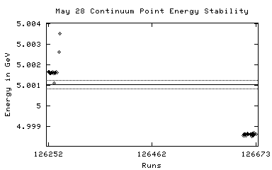 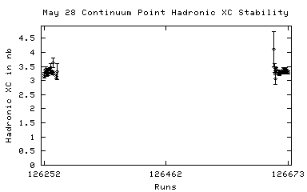
126252 05/22/2002 21:54 DataTaking 5.00163 805.29 3.17 +/- 0.16
126253 05/22/2002 23:35 DataTaking 5.00164 453.23 3.01 +/- 0.24
126254 05/23/2002 00:11 DataTaking 5.00156 698.79 3.21 +/- 0.21
126255 05/23/2002 00:40 DataTaking 5.00156 527.73 3.41 +/- 0.27
126256 05/23/2002 01:11 DataTaking 5.00156 632.71 2.91 +/- 0.23
126257 05/23/2002 01:47 DataTaking 5.00162 1267.34 3.00 +/- 0.17
126258 05/23/2002 02:37 DataTaking 5.00162 1063.86 3.15 +/- 0.20
126259 05/23/2002 03:40 DataTaking 5.00162 579.15 3.37 +/- 0.27
126260 05/23/2002 04:10 DataTaking 5.00163 1422.55 3.52 +/- 0.18
126262 05/23/2002 05:02 DataTaking 5.00157 545.37 3.09 +/- 0.34
126263 05/23/2002 05:38 DataTaking 5.00109 263.86 3.56 +/- 0.40
126264 05/23/2002 05:47 DataTaking 5.00160 32.88
n/a
126265 05/23/2002 05:58 DataTaking 5.00158 1855.10 3.11 +/- 0.14
126266 05/23/2002 07:05 DataTaking 5.00160 2382.30 3.19 +/- 0.13
126267 05/23/2002 08:31 DataTaking 5.00163 161.73 3.21 +/- 0.12
126268 05/23/2002 08:39 DataTaking 5.00160 1964.90 3.31 +/- 0.14
126269 n/a n/a DataTaking n/a n/a n/a
126270 05/23/2002 10:15 SmallCal 5.00160 0.00 n/a
126271 05/23/2002 11:01 DataTaking 5.00252 0.00 0.00 +/- 0.00
126272 05/23/2002 11:05 SmallCal 5.00252 0.00 n/a
126273 05/23/2002 11:24 DataTaking 5.00262 483.31 3.04 +/- 0.24
126274 05/23/2002 11:51 DataTaking 5.00352 54.19 2.95 +/- 0.22
126275 05/23/2002 12:18 DataTaking 5.01055 3.59 3.05 +/- 0.38
126276 05/23/2002 12:21 DataTaking 5.01058 228.30 5.91 +/- 0.71
126277 05/23/2002 12:32 DataTaking 5.01061 28.71 n/a
126278 05/23/2002 12:36 DataTaking 5.01145 n/a n/a
126279 05/23/2002 12:47 DataTaking 5.01145 n/a n/a
126280 05/23/2002 12:56 DataTaking 5.01148 240.79 n/a
126281 n/a n/a DataTaking n/a n/a n/a
126282 05/23/2002 13:14 DataTaking 5.01248 178.11 9.26 +/- 0.54
126283 05/23/2002 13:24 DataTaking 5.01351 180.96 9.68 +/- 0.74
126284 05/23/2002 13:34 DataTaking 5.01348 53.01 10.13 +/- 0.95
126285 05/23/2002 13:39 DataTaking 5.01451 157.70 n/a
126286 n/a n/a DataTaking n/a n/a n/a
126287 05/23/2002 14:33 DataTaking 5.01356 34.16 0.00 +/- 0.00
126288 05/23/2002 14:42 DataTaking 5.01360 1637.01 9.58 +/- 0.31
126289 05/23/2002 15:43 SmallCal 5.01360 0.00 n/a
126290 05/23/2002 15:59 DataTaking 5.01359 2223.37 8.74 +/- 0.26
126291 n/a n/a DataTaking n/a n/a n/a
126292 05/23/2002 17:27 DataTaking 5.01369 2300.93 8.91 +/- 0.26
126293 05/23/2002 19:07 DataTaking 5.01369 2310.36 8.49 +/- 0.25
126294 05/23/2002 20:32 DataTaking 5.01372 1978.47 8.71 +/- 0.29
126295 05/23/2002 21:45 SmallCal 5.01372 0.00 n/a
126296 05/23/2002 21:55 DataTaking 5.01372 2071.59 8.60 +/- 0.28
126297 05/23/2002 23:07 SmallCal 5.01372 0.00 n/a
126298 05/23/2002 23:21 DataTaking 5.01372 2331.29 8.34 +/- 0.24
126299 05/24/2002 00:51 DataTaking 5.01370 2341.26 8.22 +/- 0.24
126300 05/24/2002 02:18 DataTaking 5.01373 2150.77 9.06 +/- 0.28
126301 05/24/2002 03:32 SmallCal 5.01373 0.00 n/a
126302 05/24/2002 03:43 DataTaking 5.01372 2188.08 8.54 +/- 0.27
126303 05/24/2002 04:56 SmallCal 5.01373 0.00 n/a
126304 05/24/2002 05:08 DataTaking 5.01370 2326.85 8.72 +/- 0.27
126305 05/24/2002 06:32 DataTaking 5.01370 2323.04 8.78 +/- 0.27
126306 05/24/2002 07:56 DataTaking 5.01367 1963.40 n/a
126307 05/24/2002 09:02 SmallCal 5.01370 0.00 n/a
126308 05/24/2002 09:22 DataTaking 5.01373 2329.18 8.92 +/- 0.26
126309 05/24/2002 11:29 DataTaking 5.01255 2176.99 9.32 +/- 0.27
126310 05/24/2002 13:06 DataTaking 5.01260 n/a n/a
126311 05/24/2002 14:38 DataTaking 5.01264 562.08 9.87 +/- 0.65
126312 05/24/2002 14:59 SmallCal 5.01261 0.00 n/a
126313 05/24/2002 15:07 DataTaking 5.01263 29.81 9.82 +/- 0.60
126314 05/24/2002 15:11 DataTaking 5.01263 n/a n/a
126315 05/24/2002 16:15 DataTaking 5.01265 1783.34 9.35 +/- 0.31
126316 05/24/2002 17:33 DataTaking 5.01264 2394.33 9.47 +/- 0.28
126317 05/24/2002 18:57 DataTaking 5.00976 18.14 9.39 +/- 0.28
126318 05/24/2002 19:02 DataTaking 5.01264 1975.15 9.07 +/- 0.30
126319 05/24/2002 20:09 SmallCal 5.01263 0.00 n/a
126320 n/a n/a n/a n/a n/a n/a
126321 05/24/2002 20:32 DataTaking 5.01264 4.74 0.00 +/- 0.00
126322 05/24/2002 20:41 DataTaking 5.01266 1513.89 8.97 +/- 0.30
126323 05/24/2002 21:45 DataTaking 5.01264 2492.82 9.10 +/- 0.25
126324 n/a n/a DataTaking n/a n/a 9.07 +/- 0.25
126325 05/24/2002 23:44 DataTaking 5.01264 1373.84 9.55 +/- 0.35
126326 05/25/2002 00:45 DataTaking 5.01262 2342.71 9.13 +/- 0.27
126327 05/25/2002 02:03 SmallCal 5.01266 0.00 n/a
126328 05/25/2002 03:16 DataTaking 5.01266 1.21 9.13 +/- 0.27
126329 05/25/2002 03:24 DataTaking 5.01267 n/a n/a
126330 05/25/2002 04:29 DataTaking 5.01267 0.00 n/a
126331 n/a n/a DataTaking n/a n/a n/a
126332 05/25/2002 14:28 CCBigCal 5.01267 0.00 n/a
126333 05/25/2002 14:39 CCBigCal 5.01267 0.00 n/a
126334 05/25/2002 14:50 CCBigCal 5.01267 0.00 n/a
126335 05/25/2002 15:14 CCBigCal 5.01267 0.00 n/a
126336 n/a n/a n/a n/a n/a n/a
126337 05/25/2002 15:35 CosmicRun 5.01267 0.00 0.00 +/- 0.00
126338 05/25/2002 15:48 CCBigCal 5.01267 0.00 n/a
126339 n/a n/a n/a n/a n/a n/a
126340 05/25/2002 15:57 SmallCal 5.01267 0.00 n/a
126341 05/25/2002 17:39 DataTaking 5.01256 347.53 9.74 +/- 0.57
126342 05/25/2002 18:13 DataTaking 5.01262 n/a n/a
126343 05/25/2002 18:37 DataTaking 5.01261 n/a n/a
126344 05/25/2002 18:50 DataTaking 5.01260 662.41 9.93 +/- 0.35
126345 05/25/2002 19:52 DataTaking 5.01261 1838.71 9.51 +/- 0.27
126346 05/25/2002 21:18 SmallCal 5.01255 0.00 n/a
126347 05/25/2002 21:32 DataTaking 5.01261 2017.75 9.00 +/- 0.26
126348 05/25/2002 23:04 SmallCal 5.01254 n/a n/a
126349 05/25/2002 23:12 DataTaking 5.01257 2244.00 8.58 +/- 0.24
126350 05/26/2002 00:47 SmallCal 5.01254 0.00 n/a
126351 05/26/2002 00:50 SmallCal 5.01254 0.00 n/a
126352 05/26/2002 00:58 DataTaking 5.01258 2309.51 8.96 +/- 0.24
126353 05/26/2002 02:33 DataTaking 5.01260 2561.84 8.94 +/- 0.24
126354 05/26/2002 04:15 DataTaking 5.01257 2481.34 9.22 +/- 0.25
126355 05/26/2002 05:54 DataTaking 5.01260 2504.74 9.36 +/- 0.26
126356 05/26/2002 07:50 DataTaking 5.01257 2259.70 9.76 +/- 0.30
126357 05/26/2002 09:20 SmallCal 5.01257 0.00 n/a
126358 n/a n/a n/a n/a n/a n/a
126359 05/26/2002 09:42 DataTaking 5.01259 2182.38 9.14 +/- 0.16
126360 05/26/2002 13:38 DataTaking 5.01255 52.85 8.90 +/- 1.15
126361 05/26/2002 13:48 DataTaking 5.01259 2229.12 9.45 +/- 0.26
126362 05/26/2002 15:29 DataTaking 5.01258 2396.96 9.72 +/- 0.28
126363 05/26/2002 16:58 SmallCal 5.01257 0.00 n/a
126364 05/26/2002 17:09 DataTaking 5.01257 2271.07 n/a
126365 05/26/2002 18:40 SmallCal 5.01257 0.00 n/a
126366 05/26/2002 18:50 DataTaking 5.01257 0.11 0.00 +/- 0.00
126367 05/26/2002 19:02 DataTaking 5.01257 1825.89 9.16 +/- 0.31
126368 05/26/2002 20:12 SmallCal 5.01255 0.00 n/a
126369 05/26/2002 20:35 DataTaking 5.01257 2567.42 9.51 +/- 0.24
126370 05/26/2002 22:13 DataTaking 5.01253 2646.71 9.13 +/- 0.24
126371 05/26/2002 23:52 DataTaking 5.01253 2368.66 9.31 +/- 0.25
126372 05/27/2002 01:29 DataTaking 5.01252 2662.66 9.63 +/- 0.25
126373 05/27/2002 03:09 DataTaking 5.01256 2731.51 9.52 +/- 0.26
126374 05/27/2002 04:48 DataTaking 5.01254 2613.81 9.29 +/- 0.26
126375 05/27/2002 06:17 SmallCal 5.01250 0.00 n/a
126376 05/27/2002 06:28 DataTaking 5.01254 2697.10 9.48 +/- 0.25
126377 n/a n/a DataTaking n/a n/a 9.39 +/- 0.25
126378 05/27/2002 12:26 RandomLow 5.01253 2641.01 0.00 +/- 0.00
126379 05/27/2002 12:51 CosmicRun 5.01253 5.84 0.00 +/- 0.00
126380 05/27/2002 14:11 RandomLow 5.01253 5.84 n/a
126381 05/27/2002 14:17 CosmicRun 5.01253 5.84 0.00 +/- 0.00
126382 05/27/2002 15:18 CosmicRun 5.01253 5.84 0.00 +/- 0.00
126383 05/27/2002 15:45 RandomLow 5.01253 5.84 n/a
126384 05/27/2002 15:49 DataTaking 1.83075 5.84 0.00 +/- 0.00
126385 05/27/2002 16:18 CosmicRun 1.83075 0.03 0.00 +/- 0.00
126386 05/27/2002 16:29 CosmicRun 1.83075 0.00 98.75 +/- 98.75
126387 05/27/2002 16:40 RandomLow 1.83075 0.00 91.70 +/- 35.32
126388 05/27/2002 16:48 DataTaking 1.83075 0.00 n/a
126389 05/27/2002 17:09 CosmicRun 1.83076 0.00 0.00 +/- 0.00
126390 05/27/2002 17:32 CosmicRun 1.83076 0.00 0.00 +/- 0.00
126391 05/27/2002 17:49 CosmicRun 1.83076 0.05 0.00 +/- 0.00
126392 05/27/2002 17:59 DataTaking 1.83075 0.00 65.83 +/- 34.70
126393 05/27/2002 18:20 CosmicRun 1.83076 0.00 0.00 +/- 0.00
126394 05/27/2002 18:30 CosmicRun 1.83076 0.00 0.00 +/- 0.00
126395 05/27/2002 18:36 CosmicRun 1.83076 n/a n/a
126396 05/27/2002 18:47 CosmicRun 1.83076 11.01 0.00 +/- 0.00
126397 n/a n/a n/a n/a n/a n/a
126398 n/a n/a n/a n/a n/a n/a
126399 05/27/2002 23:15 CosmicRun 1.83076 45.59 121.91 +/- 12.89
126400 05/28/2002 07:51 CCBigCal 1.83076 0.00 n/a
126401 05/28/2002 08:11 CCBigCal 1.83076 0.00 n/a
126402 n/a n/a n/a n/a n/a n/a
126403 n/a n/a DRBigCal n/a n/a n/a
126404 05/28/2002 08:42 DRBigCal 1.83076 0.00 n/a
126405 05/28/2002 09:00 DRBigCal 1.83076 0.00 n/a
126406 05/28/2002 09:32 DRBigCal 1.83076 0.03 n/a
126407 05/28/2002 09:46 CCBigCal 1.83076 0.00 n/a
126408 05/28/2002 10:04 SmallCal 1.83076 0.00 n/a
126409 05/28/2002 10:18 CCBigCal 1.83076 0.00 n/a
126410 05/28/2002 10:33 CCBigCal 1.83076 0.00 n/a
126411 05/28/2002 10:39 RICHWire 1.83076 0.00 n/a
126412 05/28/2002 10:54 SVXBigCal 1.83076 0.00 n/a
126413 n/a n/a n/a n/a n/a n/a
126414 n/a n/a RandomLow n/a n/a n/a
126415 05/28/2002 11:55 RandomLow 1.83076 0.00 n/a
126416 05/28/2002 12:15 RandomLow 1.83076 0.03 0.00 +/- 0.00
126417 05/28/2002 15:05 RandomLow 1.83076 0.00 n/a
126418 05/28/2002 15:51 RandomLow 1.83076 0.00 0.00 +/- 0.00
126419 05/28/2002 17:50 SmallCal 1.83076 n/a n/a
126420 05/28/2002 18:07 CosmicRun 1.83076 16.79 0.00 +/- 0.00
126421 05/28/2002 18:17 CosmicRun 1.83076 13.70 0.00 +/- 0.00
May 28 Scan (more is coming...)
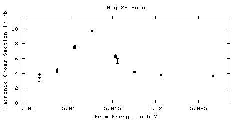
126422 05/28/2002 19:35 DataTaking 5.00866 89.32
n/a
126424 05/28/2002 19:50 DataTaking 5.00861 87.56 0.00 +/- 0.00
126425 n/a n/a n/a n/a n/a n/a
126426 n/a n/a n/a n/a n/a n/a
126427 05/28/2002 20:45 DataTaking 5.01067 n/a n/a
126428 05/28/2002 21:09 DataTaking 5.01559 59.26 0.00 +/- 0.00
126429 05/28/2002 21:55 DataTaking 5.01062 1558.11 6.69 +/- 0.24
126430 05/28/2002 22:57 SmallCal 5.01062 0.00 n/a
126431 05/28/2002 23:06 DataTaking 5.01065 1403.67 6.84 +/- 0.23
126432 05/29/2002 00:30 DataTaking 5.01061 1581.10 7.11 +/- 0.23
126433 05/29/2002 01:49 DataTaking 5.01063 1655.73 7.33 +/- 0.24
126434 05/29/2002 03:05 DataTaking 5.01063 1576.44 6.87 +/- 0.23
126435 05/29/2002 04:21 DataTaking 5.02665 1683.04 3.52 +/- 0.14
126436 05/29/2002 05:40 DataTaking 5.00858 1573.04 4.37 +/- 0.15
126437 n/a n/a DataTaking n/a n/a 4.41 +/- 0.15
126438 05/29/2002 11:44 RandomLow 5.00859 0.00 n/a
126439 05/29/2002 12:00 CosmicRun 5.00859 0.00 39.58 +/- 32.32
126440 05/29/2002 12:07 SmallCal 5.00859 0.00 n/a
126441 05/29/2002 12:19 RandomLow 5.00859 0.00 39.58 +/- 32.32
126442 05/29/2002 12:24 CosmicRun 5.00859 3.07 0.00 +/- 0.00
126443 05/29/2002 12:42 RandomLow 5.00859 0.00 58.05 +/- 28.76
126444 n/a n/a n/a n/a n/a n/a
126445 n/a n/a CosmicRun n/a n/a n/a
126446 05/29/2002 17:43 CosmicRun 0.00000 0.00 0.00 +/- 0.00
126447 05/29/2002 17:55 RandomLow 0.00000 0.25 0.00 +/- 0.00
126448 n/a n/a DataTaking n/a n/a 0.00 +/- 0.00
May 28 Scan
126449 05/29/2002 18:20 DataTaking 5.01534 1078.41 5.97 +/- 0.24
126451 05/29/2002 22:31 DataTaking 5.01535 525.40 5.89 +/- 0.32
126452 05/29/2002 22:57 DataTaking 5.01538 13.78 5.84 +/- 0.31
126453 05/29/2002 23:01 DataTaking 5.01538 270.30 6.59 +/- 0.47
126454 05/29/2002 23:44 DataTaking 5.02062 886.11 3.98 +/- 0.23
126455 05/30/2002 00:21 SmallCal 5.02065 0.00 n/a
126456 05/30/2002 00:36 SmallCal 5.02065 0.00 n/a
126457 05/30/2002 00:48 DataTaking 5.00653 69.92 0.00 +/- 0.00
126458 05/30/2002 00:53 DataTaking 5.00656 165.70 3.16 +/- 0.47
126459 05/30/2002 01:01 SmallCal 5.00656 0.00 n/a
126460 05/30/2002 01:09 DataTaking 5.00655 1031.32 3.45 +/- 0.16
126461 05/30/2002 02:16 DataTaking 5.01756 1509.95 4.06 +/- 0.16
126462 05/30/2002 03:31 DataTaking 5.01067 463.18 7.12 +/- 0.40
126463 n/a n/a DataTaking n/a n/a 7.15 +/- 0.38
126464 05/30/2002 06:02 DataTaking 5.01071 1008.19 7.05 +/- 0.29
126465 05/30/2002 07:04 DataTaking 5.01063 1328.14 7.47 +/- 0.28
126466 05/30/2002 07:57 SmallCal 5.01076 0.00 n/a
126467 05/30/2002 08:24 DataTaking 5.01065 717.32 6.86 +/- 0.29
126468 05/30/2002 09:17 DataTaking 5.01264 14.22 6.86 +/- 0.29
126469 05/30/2002 09:22 DataTaking 5.01264 1191.07 9.07 +/- 0.29
126470 n/a n/a n/a n/a n/a n/a
126471 05/30/2002 11:13 DataTaking 4.99863 1170.33 3.31 +/- 0.15
126472 05/30/2002 12:15 DataTaking 4.99867 1952.22 3.32 +/- 0.12
126473 05/30/2002 14:14 DataTaking 4.99875 1973.73 3.35 +/- 0.12
126474 05/30/2002 15:25 SmallCal 4.99874 0.00 n/a
126475 05/30/2002 15:37 DataTaking 4.99874 1110.22 3.11 +/- 0.17
126476 05/30/2002 16:18 DataTaking 4.99874 589.21 3.48 +/- 0.20
126477 05/30/2002 17:02 DataTaking 4.99875 2005.40 3.42 +/- 0.12
126478 05/30/2002 18:28 DataTaking 4.99877 2028.79 3.33 +/- 0.12
126479 05/30/2002 19:53 DataTaking 4.99875 1950.03 3.25 +/- 0.12
126480 05/30/2002 21:19 DataTaking 4.99874 1716.55 3.26 +/- 0.15
126481 05/30/2002 22:25 SmallCal 4.99877 0.00 n/a
126482 05/30/2002 22:43 SmallCal 4.99877 0.00 n/a
126483 05/30/2002 22:50 DataTaking 4.99877 1740.79 3.30 +/- 0.14
126484 05/30/2002 23:57 SmallCal 4.99874 0.00 n/a
126485 05/31/2002 00:12 DataTaking 4.99877 1976.74 3.24 +/- 0.11
126486 n/a n/a DataTaking n/a n/a 3.19 +/- 0.11
126487 05/31/2002 01:55 DataTaking 4.99877 1557.78 3.25 +/- 0.13
126488 05/31/2002 03:18 DataTaking 4.99876 1739.97 3.11 +/- 0.12
126489 05/31/2002 04:39 SmallCal 4.99876 0.00 n/a
126490 05/31/2002 04:46 DataTaking 4.99876 1907.34 3.11 +/- 0.13
126491 05/31/2002 05:58 SmallCal 4.99876 0.00 n/a
126492 05/31/2002 06:07 DataTaking 4.99877 2109.04 3.20 +/- 0.12
126493 n/a n/a DataTaking n/a n/a 3.25 +/- 0.11
126494 05/31/2002 07:42 DataTaking 4.99877 1051.07 3.12 +/- 0.17
126495 n/a n/a DataTaking n/a n/a n/a
May 28 Peak Point
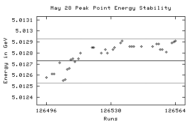 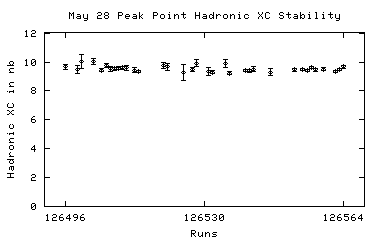
126496 05/31/2002 10:56 DataTaking 5.01258 566.27 9.83 +/- 0.65
126499 05/31/2002 11:41 DataTaking 5.01261 207.84 12.20 +/- 1.69
126500 05/31/2002 11:54 DataTaking 5.01261 83.64 8.87 +/- 0.82
126501 n/a n/a DataTaking n/a n/a 9.04 +/- 1.22
126502 n/a n/a DataTaking n/a n/a n/a
126503 05/31/2002 12:47 DataTaking 5.01271 397.70 9.59 +/- 0.73
126504 05/31/2002 13:09 SmallCal 5.01270 0.00 n/a
126505 05/31/2002 14:17 DataTaking 5.01255 1140.14 8.92 +/- 0.25
126506 05/31/2002 15:49 DataTaking 5.01256 822.11 9.09 +/- 0.37
126507 05/31/2002 16:33 DataTaking 5.01265 737.51 8.92 +/- 0.39
126508 05/31/2002 17:14 DataTaking 5.01266 2103.67 8.78 +/- 0.25
126509 05/31/2002 18:46 DataTaking 5.01274 1831.34 9.45 +/- 0.29
126510 05/31/2002 20:00 DataTaking 5.01275 2013.23 9.09 +/- 0.28
126511 05/31/2002 21:21 DataTaking 5.01272 637.75 9.74 +/- 0.57
126512 05/31/2002 21:47 DataTaking 5.01275 n/a 9.04 +/- 0.59
126513 05/31/2002 22:10 DataTaking 5.01275 653.78 8.22 +/- 0.40
126514 05/31/2002 22:44 DataTaking 5.01280 2037.10 9.21 +/- 0.28
126515 05/31/2002 23:54 SmallCal 5.01280 0.00 n/a
126516 06/01/2002 00:12 DataTaking 5.01282 0.82 9.28 +/- 0.28
126517 06/01/2002 00:16 DataTaking 5.01283 n/a n/a
126518 n/a n/a DataTaking n/a n/a n/a
126519 06/01/2002 01:44 DataTaking 5.01285 70.99 0.00 +/- 0.00
126520 06/01/2002 01:51 DataTaking 5.01285 495.37
n/a
126521 06/01/2002 02:29 DataTaking 5.01285 384.19 10.42 +/- 0.62
126522 06/01/2002 02:59 DataTaking 5.01286 2121.75 9.10 +/- 0.26
126523 06/01/2002 04:18 DataTaking 5.01285 2084.00 n/a
126524 06/01/2002 05:34 SmallCal 5.01283 0.00 n/a
126525 06/01/2002 05:44 DataTaking 5.01280 59.21 8.23 +/- 1.05
126526 06/01/2002 05:53 SmallCal 5.01280 0.00 n/a
126527 06/01/2002 06:08 DataTaking 5.01283 1305.23 9.37 +/- 0.33
126528 06/01/2002 06:59 DataTaking 5.01280 296.16 9.23 +/- 0.70
126529 06/01/2002 07:20 RandomLow 5.01280 4.00 9.31 +/- 0.70
126530 06/01/2002 07:32 DataTaking 5.01285 0.00 0.00 +/- 0.00
126531 06/01/2002 07:44 DataTaking 5.01283 242.27 9.58 +/- 0.89
126532 06/01/2002 08:06 DataTaking 5.01285 2238.41 9.04 +/- 0.25
126533 06/01/2002 09:40 SmallCal 5.01286 0.00 n/a
126534 06/01/2002 09:59 SmallCal 5.01286 0.00 n/a
126535 06/01/2002 10:38 DataTaking 5.01289 261.89 8.61 +/- 0.78
126536 06/01/2002 10:58 DataTaking 5.01291 2194.36 8.65 +/- 0.25
126537 06/01/2002 12:28 SmallCal 5.01286 0.00 n/a
126538 06/01/2002 12:36 DataTaking 5.01289 2254.19 9.04 +/- 0.24
126539 06/01/2002 14:10 DataTaking 5.01287 2373.73 9.05 +/- 0.24
126540 06/01/2002 15:46 DataTaking 5.01286 2385.48 9.13 +/- 0.26
126541 06/01/2002 17:28 DataTaking 5.01286 2222.93 9.01 +/- 0.26
126542 06/01/2002 18:59 DataTaking 5.01286 575.23 10.64 +/- 0.72
126543 06/01/2002 19:21 DataTaking 5.01286 1625.07 8.54 +/- 0.29
126544 06/01/2002 20:28 SmallCal 5.01285 0.00 8.51 +/- 0.28
126545 06/01/2002 20:34 SmallCal 5.01285 0.00 n/a
126546 06/01/2002 20:47 DataTaking 5.01286 299.18
n/a
126547 06/01/2002 21:25 SmallCal 5.01288 n/a n/a
126548 06/01/2002 21:28 SmallCal 5.01288 n/a n/a
126549 06/01/2002 21:32 SmallCal 5.01288 n/a n/a
126550 06/01/2002 21:49 SmallCal 5.01288 n/a n/a
126551 06/01/2002 22:01 SmallCal 5.01288 n/a n/a
126552 06/01/2002 22:09 DataTaking 5.01286 2390.85 9.56 +/- 0.27
126553 06/01/2002 23:33 SmallCal 5.01288 0.00 n/a
126554 06/01/2002 23:43 DataTaking 5.01288 2541.81 8.87 +/- 0.23
126555 06/02/2002 01:19 DataTaking 5.01288 2497.07 9.11 +/- 0.24
126556 06/02/2002 03:00 DataTaking 5.01283 2564.14 9.24 +/- 0.24
126557 06/02/2002 04:35 DataTaking 5.01283 2469.15 9.42 +/- 0.27
126558 06/02/2002 06:02 SmallCal 5.01283 0.00 n/a
126559 06/02/2002 06:12 DataTaking 5.01281 2351.01
n/a
126560 06/02/2002 07:39 SmallCal 5.01283 0.00 n/a
126561 06/02/2002 07:45 SmallCal 5.01283 0.00 n/a
126562 06/02/2002 07:54 DataTaking 5.01289 2224.05 9.30 +/- 0.26
126563 06/02/2002 09:22 DataTaking 5.01290 2610.03 9.17 +/- 0.25
126564 06/02/2002 10:57 DataTaking 5.01291 1328.05 8.85 +/- 0.36
126565 06/02/2002 11:55 SmallCal 5.01292 0.00 n/a
126566 06/02/2002 12:11 DataTaking 5.01290 259.81 9.57 +/- 0.56
126567 06/02/2002 12:33 DataTaking 5.01287 2.58 9.57 +/- 0.56
126568 06/02/2002 12:38 DataTaking 5.01286 2328.90 9.33 +/- 0.25
126569 06/02/2002 14:08 DataTaking 5.01290 2553.23 9.09 +/- 0.24
126570 n/a n/a DataTaking n/a n/a 9.07 +/- 0.24
126571 06/02/2002 15:54 SmallCal 5.01288 0.00 n/a
126572 06/02/2002 20:34 DataTaking 5.01295 2407.67 9.06 +/- 0.23
126573 06/02/2002 22:12 DataTaking 5.01293 2405.15 8.73 +/- 0.23
126574 06/02/2002 23:43 SmallCal 5.01296 0.00 n/a
126575 06/02/2002 23:52 DataTaking 5.01294 2395.81 9.24 +/- 0.24
126576 06/03/2002 01:24 DataTaking 5.01290 2574.00 8.94 +/- 0.24
126577 06/03/2002 02:59 DataTaking 5.01288 2588.25 8.77 +/- 0.24
126578 06/03/2002 04:34 DataTaking 5.01285 2098.66 9.36 +/- 0.27
126579 06/03/2002 05:50 DataTaking 5.01289 1522.33 8.45 +/- 0.30
126580 06/03/2002 06:43 SmallCal 5.01288 0.00 n/a
126581 06/03/2002 07:00 DataTaking 5.01288 1775.12 8.97 +/- 0.29
126582 06/03/2002 15:29 DataTaking 1.83075 0.00 n/a
126583 n/a n/a n/a n/a n/a n/a
126584 n/a n/a n/a n/a n/a n/a
126585 n/a n/a n/a n/a n/a n/a
126586 06/03/2002 17:07 RandomLow 1.83075 0.03 n/a
126587 06/03/2002 17:11 RandomLow 1.83075 0.00 n/a
126588 06/03/2002 21:05 DataTaking 1.06978 697.67 0.00 +/- 0.00
126589 06/03/2002 22:23 DataTaking 1.83089 0.19 0.00 +/- 0.00
126590 06/03/2002 22:44 DataTaking 1.83089 1.78 n/a
126591 06/04/2002 07:07 SmallCal 1.83089 0.00 n/a
126592 n/a n/a n/a n/a n/a n/a
126593 n/a n/a n/a n/a n/a n/a
126594 n/a n/a n/a n/a n/a n/a
126595 06/04/2002 10:46 RandomLow 1.83089 0.03 n/a
126596 06/04/2002 10:53 DRBigCal 1.83089 0.00 n/a
126597 n/a n/a n/a n/a n/a n/a
126598 06/04/2002 11:10 DRBigCal 1.83089 0.00 n/a
126599 06/04/2002 11:26 CCBigCal 1.83089 0.00 n/a
126600 06/04/2002 11:28 CCBigCal 1.83089 0.00 n/a
126601 06/04/2002 11:42 CCBigCal 1.83089 0.00 n/a
126602 n/a n/a n/a n/a n/a n/a
126603 n/a n/a n/a n/a n/a n/a
126604 n/a n/a RandomLow n/a n/a n/a
126605 06/04/2002 13:54 RandomLow 1.83089 0.03 0.00 +/- 0.00
126606 06/04/2002 14:07 SmallCal 1.83089 0.00 n/a
126607 06/04/2002 14:10 RICHWire 1.83089 0.00 n/a
126608 06/04/2002 14:13 RICHWire 1.83089 0.00 n/a
126609 06/04/2002 16:58 DataTaking 5.01334 0.00 n/a
126610 06/04/2002 17:08 DataTaking 5.01331 0.03 0.00 +/- 0.00
126611 06/04/2002 17:16 DataTaking 5.01334 0.00 0.00 +/- 0.00
126612 06/04/2002 17:33 CosmicRun 5.01332 0.00 1.65 +/- 1.75
126613 06/04/2002 19:19 SVXBigCal 5.01332 0.00 n/a
126614 06/04/2002 19:30 CosmicRun 5.01332 0.00 n/a
126615 06/04/2002 19:46 CosmicRun 0.00000 0.00 0.00 +/- 0.00
126616 06/04/2002 23:49 SmallCal 0.00000 n/a n/a
126617 06/05/2002 01:37 SmallCal 0.00000 n/a n/a
126618 06/05/2002 02:02 DataTaking 4.18959 323.34 4.19 +/- 0.23
126619 06/05/2002 03:39 DataTaking 4.18962 298.08 4.30 +/- 0.24
126620 06/05/2002 04:23 SmallCal 4.18962 0.00 n/a
126621 06/05/2002 04:38 DataTaking 4.18961 434.22 4.18 +/- 0.19
126622 06/05/2002 05:36 DataTaking 4.18963 306.85 4.38 +/- 0.28
126623 06/05/2002 06:42 DataTaking 4.18965 0.08 0.00 +/- 0.00
126624 06/05/2002 06:51 DataTaking 4.18962 257.20 4.26 +/- 0.33
126625 06/05/2002 07:31 DataTaking 4.18962 643.92 4.67 +/- 0.21
126626 06/05/2002 09:18 DataTaking 4.18971 n/a 0.00 +/- 0.00
126627 n/a n/a DataTaking n/a n/a n/a
126628 06/05/2002 14:53 RandomLow 4.18971 0.03 n/a
126629 n/a n/a n/a n/a n/a n/a
126630 06/05/2002 15:52 CosmicRun 4.18971 0.00 0.00 +/- 0.00
126631 06/05/2002 18:56 SmallCal 0.00000 n/a n/a
126632 06/05/2002 19:02 SmallCal 0.00000 n/a n/a
126633 n/a n/a n/a n/a n/a n/a
126634 n/a n/a DataTaking n/a n/a n/a
126635 06/05/2002 19:52 CosmicRun 0.00000 0.00 0.00 +/- 0.00
126636 06/05/2002 19:59 SmallCal 0.00000 0.00 n/a
126637 06/05/2002 20:04 DataTaking 3.68947 26.96 0.00 +/- 0.00
126638 n/a n/a DataTaking n/a n/a 0.00 +/- 0.00
126639 06/05/2002 22:32 CosmicRun 3.68952 0.55 0.00 +/- 0.00
126640 06/05/2002 22:40 DataTaking 3.68935 12.88 267.45 +/- 279.34
126641 06/06/2002 02:45 DataTaking 3.68990 4.22 0.00 +/- 0.00
126642 n/a n/a n/a n/a n/a n/a
126643 06/06/2002 03:50 DataTaking 3.68993 3.75 0.00 +/- 0.00
126644 06/06/2002 04:31 DataTaking 3.68993 6.60 12.15 +/- 3.10
126645 06/06/2002 05:19 SmallCal 3.68992 0.00 n/a
126646 06/06/2002 06:51 DataTaking 3.68993 45.56 4.98 +/- 0.55
126647 06/06/2002 08:02 DataTaking 3.68994 28.49 4.40 +/- 0.45
May 28 Continuum Point
126648 06/06/2002 09:14 DataTaking 4.99854 27.64 4.11 +/- 0.63
126649 06/06/2002 09:23 DataTaking 4.99860 202.82 3.41 +/- 0.27
126650 06/06/2002 09:42 DataTaking 4.99855 92.47 3.04 +/- 0.34
126651 06/06/2002 10:05 DataTaking 4.99860 198.74 3.30 +/- 0.21
126652 06/06/2002 10:38 DataTaking 4.99863 1531.84 3.33 +/- 0.12
126653 06/06/2002 12:01 DataTaking 4.99856 1983.18 3.30 +/- 0.12
126656 06/06/2002 14:49 DataTaking 4.99864 1983.95 3.44 +/- 0.12
126657 06/06/2002 16:14 DataTaking 4.99862 1936.71 3.33 +/- 0.12
126658 06/06/2002 18:10 DataTaking 4.99863 1499.78 3.14 +/- 0.13
126659 06/06/2002 19:20 SmallCal 4.99860 0.00 n/a
126660 06/06/2002 19:36 SmallCal 4.99860 0.00 n/a
126661 06/06/2002 19:46 SmallCal 4.99860 0.00 n/a
126662 06/06/2002 19:51 DataTaking 4.99862 1383.92 3.23 +/- 0.15
126663 06/06/2002 20:46 SmallCal 4.99869 0.00 n/a
126664 06/06/2002 21:07 DataTaking 4.99861 1994.68 3.37 +/- 0.11
126665 06/06/2002 22:28 DataTaking 4.99853 1962.49 3.31 +/- 0.12
126666 06/06/2002 23:49 DataTaking 4.99864 1986.55 3.26 +/- 0.12
126667 06/07/2002 01:17 DataTaking 4.99859 2030.74 3.21 +/- 0.11
126668 06/07/2002 02:40 DataTaking 4.99856 1998.74 3.28 +/- 0.12
126669 06/07/2002 04:04 DataTaking 4.99860 1965.97 3.50 +/- 0.12
126670 06/07/2002 05:26 DataTaking 4.99867 1955.48 3.27 +/- 0.12
126671 06/07/2002 06:41 SmallCal 4.99850 0.00 n/a
126672 06/07/2002 06:59 SmallCal 4.99850 0.00 n/a
126673 06/07/2002 07:05 DataTaking 4.99862 1396.44 3.08 +/- 0.15
126674 06/07/2002 07:59 SmallCal 4.99870 0.00 n/a
126675 06/07/2002 08:43 DataTaking 5.01276 1.78 3.07 +/- 0.14
126676 06/07/2002 08:47 DataTaking 5.01276 1271.26 9.32 +/- 0.33
126677 06/07/2002 09:40 DataTaking 5.01273 390.38 9.99 +/- 0.59
126678 06/07/2002 10:16 DataTaking 5.01286 2.33 9.99 +/- 0.58
126679 06/07/2002 10:23 DataTaking 5.01281 1030.14 9.20 +/- 0.36
126680 06/07/2002 12:20 DataTaking 5.01275 2057.15 9.15 +/- 0.25
126681 n/a n/a DataTaking n/a n/a 9.18 +/- 0.25
126682 06/07/2002 14:04 DataTaking 5.01293 1392.05 9.32 +/- 0.30
126683 06/07/2002 15:05 DataTaking 5.01294 2080.36 9.37 +/- 0.26
126684 06/07/2002 16:26 DataTaking 5.01291 1916.82 8.97 +/- 0.25
126685 06/07/2002 17:48 DataTaking 5.01279 1749.92 9.31 +/- 0.28
126686 06/07/2002 18:58 SmallCal 5.01264 0.00 n/a
126687 06/07/2002 19:11 DataTaking 5.01263 6.82 9.29 +/- 0.28
126688 06/07/2002 19:20 DataTaking 5.01269 1733.10 8.99 +/- 0.26
126689 06/07/2002 20:35 DataTaking 5.01258 2093.37 9.31 +/- 0.26
126690 06/07/2002 22:00 DataTaking 5.01261 2006.99 9.36 +/- 0.27
126691 06/07/2002 23:17 DataTaking 5.01264 1316.88 9.29 +/- 0.32
126692 06/08/2002 00:13 DataTaking 5.01272 2136.99 8.93 +/- 0.25
126693 06/08/2002 01:37 DataTaking 5.01260 1886.96 9.20 +/- 0.27
126694 06/08/2002 02:49 SmallCal 5.01258 0.00 n/a
126695 06/08/2002 02:59 DataTaking 5.01260 1833.86 n/a
126696 n/a n/a SmallCal n/a n/a n/a
126697 06/08/2002 04:28 RandomLow 5.01260 8.22 0.00 +/- 0.00
126698 06/08/2002 04:31 SmallCal 5.01260 0.00 n/a
126699 06/08/2002 04:37 DataTaking 5.01268 1626.33 9.29 +/- 0.29
126700 06/08/2002 05:38 SmallCal 5.01260 0.00 n/a
126701 06/08/2002 05:44 DataTaking 5.01263 2066.03 9.08 +/- 0.25
126702 06/08/2002 07:05 DataTaking 5.01260 2147.10 9.32 +/- 0.27
126703 06/08/2002 08:30 DataTaking 5.01252 2440.71 9.37 +/- 0.25
126704 06/08/2002 10:07 DataTaking 5.01258 2519.37 8.78 +/- 0.23
126705 06/08/2002 11:45 DataTaking 5.01258 0.00 n/a
126706 06/08/2002 12:09 DataTaking 5.01254 1659.97 9.05 +/- 0.28
126707 06/08/2002 13:19 DataTaking 5.01255 2359.45 8.61 +/- 0.23
126708 06/08/2002 14:48 SmallCal 5.01261 0.00 n/a
126709 06/08/2002 14:55 DataTaking 5.01261 2543.34 8.73 +/- 0.22
126710 06/08/2002 16:33 DataTaking 5.01261 423.07 9.58 +/- 0.63
126711 06/08/2002 16:58 DataTaking 5.01261 2376.00 9.07 +/- 0.25
126712 06/08/2002 18:25 SmallCal 5.01261 0.00 n/a
126713 06/08/2002 18:37 SmallCal 5.01261 n/a n/a
126714 06/08/2002 18:44 DataTaking 5.01260 2121.40 8.76 +/- 0.25
126715 06/08/2002 20:08 SmallCal 5.01262 0.00 n/a
126716 06/08/2002 20:15 DataTaking 5.01260 2196.38 9.54 +/- 0.25
126717 06/08/2002 21:50 DataTaking 5.01255 2174.30 9.19 +/- 0.24
126718 06/08/2002 23:21 DataTaking 5.01257 656.16 9.40 +/- 0.50
126719 06/08/2002 23:49 DataTaking 5.01259 1606.11 9.51 +/- 0.28
126720 06/09/2002 00:58 DataTaking 5.01257 2453.56 9.12 +/- 0.23
126721 06/09/2002 02:35 DataTaking 5.01253 596.66 n/a
126722 06/09/2002 03:05 DataTaking 5.01256 1553.53 9.23 +/- 0.28
126723 06/09/2002 04:10 DataTaking 5.01256 2463.34 9.35 +/- 0.24
126724 06/09/2002 05:44 SmallCal 5.01265 0.00 n/a
126725 06/09/2002 05:49 DataTaking 5.01262 1976.11 n/a
126726 06/09/2002 07:12 SmallCal 5.01262 0.00 n/a
126727 06/09/2002 07:16 SmallCal 5.01262 0.00 n/a
126728 06/09/2002 07:22 DataTaking 5.01251 2408.58 8.77 +/- 0.24
126729 06/09/2002 09:00 DataTaking 5.01262 2309.86 9.01 +/- 0.25
126730 06/09/2002 10:29 SmallCal 5.01258 0.00 n/a
126731 06/09/2002 10:38 DataTaking 5.01255 2421.45 9.03 +/- 0.23
126732 06/09/2002 12:13 DataTaking 5.01264 2441.92 9.39 +/- 0.24
126733 06/09/2002 13:49 DataTaking 5.01259 2422.05 9.56 +/- 0.25
126734 06/09/2002 15:23 DataTaking 5.01252 2533.23 9.01 +/- 0.23
126735 06/09/2002 17:02 DataTaking 5.01257 2501.18 9.61 +/- 0.25
126736 06/09/2002 18:38 DataTaking 5.01258 2394.25 9.06 +/- 0.25
126737 06/09/2002 20:13 DataTaking 5.01261 2445.56 9.11 +/- 0.25
126738 06/09/2002 21:48 DataTaking 5.01254 2272.19 9.09 +/- 0.25
126739 06/09/2002 23:18 SmallCal 5.01262 0.00 n/a
126740 06/09/2002 23:23 DataTaking 5.01257 1901.75 n/a
126741 n/a n/a SmallCal n/a n/a n/a
126742 06/10/2002 00:56 SmallCal 5.01256 0.00 n/a
126743 06/10/2002 01:02 DataTaking 5.01256 0.05 0.00 +/- 0.00
126744 06/10/2002 01:18 DataTaking 5.01253 1960.49 8.96 +/- 0.25
126745 06/10/2002 02:46 DataTaking 5.01265 966.99 9.19 +/- 0.38
126746 06/10/2002 03:28 DataTaking 5.01254 2477.45 9.50 +/- 0.24
126747 06/10/2002 05:04 DataTaking 5.01266 2299.18 9.35 +/- 0.25
126748 06/10/2002 06:32 SmallCal 5.01257 0.00 n/a
126749 06/10/2002 06:41 DataTaking 5.01269 2109.12 8.84 +/- 0.24
126750 n/a n/a DataTaking n/a n/a 8.86 +/- 0.23
126751 06/10/2002 10:41 DataTaking 1.83077 0.00 0.00 +/- 0.00
126752 06/10/2002 10:49 RandomLow 1.83077 1.59 0.00 +/- 0.00
126753 06/10/2002 13:51 DataTaking 1.83077 10.38 0.00 +/- 0.00
126754 06/10/2002 13:57 DataTaking 1.83071 156.63 0.00 +/- 0.00
126755 06/10/2002 14:11 DataTaking 1.83071 0.03 16.46 +/- 10.26
126756 06/10/2002 14:21 DataTaking 1.83071 150.16 n/a
126757 06/10/2002 15:24 RandomPrescale1 1.83071 480.11 0.00 +/- 0.00
126758 n/a n/a DataTaking n/a n/a n/a
126759 n/a n/a DataTaking n/a n/a n/a
126760 06/10/2002 19:54 DataTaking 1.83090 0.00 n/a
126761 06/10/2002 20:28 DataTaking 1.83090 0.00 n/a
126762 06/10/2002 20:55 DataTaking 1.83090 0.00 n/a
126763 06/11/2002 00:06 DataTaking 1.83094 30.30 n/a
126764 06/11/2002 00:34 DataTaking 1.83094 3.51 n/a
126765 06/11/2002 05:27 DataTaking 1.83110 13.04 98.71 +/- 13.96
126766 n/a n/a DataTaking n/a n/a 99.68 +/- 13.92
126767 06/11/2002 07:22 DRBigCal 1.83110 0.00 n/a
126768 06/11/2002 07:30 SmallCal 1.83110 0.00 n/a
126769 06/11/2002 07:42 CCBigCal 1.83110 0.00 n/a
126770 06/11/2002 07:45 RICHWire 1.83110 0.00 n/a
126771 06/11/2002 08:01 SVXBigCal 1.83110 0.00 n/a
126772 06/11/2002 16:46 CosmicRun 1.83110 0.55 n/a
126773 06/11/2002 19:14 CosmicRun 1.83110 15.07 0.00 +/- 0.00
126774 06/11/2002 19:29 DataTaking 5.02628 224.63 23.93 +/- 9.43
126775 06/11/2002 19:53 SmallCal 5.02667 0.00 n/a
Jun 11 Scan (more is coming...)
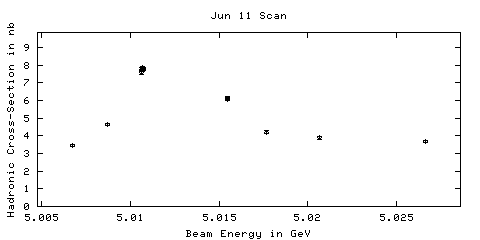
126776 06/11/2002 20:04 DataTaking 5.01066 1622.47 7.41 +/- 0.22
126777 06/11/2002 21:22 DataTaking 5.01063 1658.03 7.47 +/- 0.23
126778 06/11/2002 22:44 DataTaking 5.01063 1704.11 6.97 +/- 0.21
126779 06/12/2002 00:13 DataTaking 5.01061 1574.93 7.80 +/- 0.23
126780 06/12/2002 01:43 DataTaking 5.02662 1238.38 3.55 +/- 0.13
126782 06/12/2002 03:14 DataTaking 5.00871 1490.38 4.51 +/- 0.15
126783 06/12/2002 04:44 DataTaking 5.01547 1457.51 5.81 +/- 0.19
126784 06/12/2002 06:12 DataTaking 5.01263 0.00 5.83 +/- 0.19
126785 06/12/2002 06:24 DataTaking 5.01266 0.11 0.00 +/- 0.00
126786 06/12/2002 07:38 SmallCal 5.01269 0.00 n/a
126787 06/12/2002 08:15 DataTaking 3.68959 0.08 12.29 +/- 4.57
126788 06/12/2002 08:39 DataTaking 3.69551 n/a n/a
126789 06/12/2002 09:20 DataTaking 3.69544 69.40 0.00 +/- 0.00
126790 06/12/2002 09:35 DataTaking 3.68962 0.00 0.00 +/- 0.00
126791 06/12/2002 10:25 DRBigCal 3.68962 0.00 n/a
126792 06/12/2002 10:38 DRBigCal 3.68962 0.00 n/a
126793 06/12/2002 10:57 DRBigCal 3.68962 0.00 n/a
126794 06/12/2002 11:11 CCBigCal 3.68962 0.00 n/a
126795 06/12/2002 11:34 CCBigCal 3.68962 0.00 n/a
126796 06/12/2002 12:19 CCBigCal 3.68962 0.00 n/a
126797 n/a n/a DataTaking n/a n/a n/a
126798 06/12/2002 12:23 CCBigCal 3.68962 n/a n/a
126799 06/12/2002 12:34 CCBigCal 3.68962 0.00 n/a
126800 06/12/2002 13:04 DataTaking 3.69544 17.95 n/a
126801 n/a n/a DataTaking n/a n/a n/a
126802 06/12/2002 14:05 DataTaking 3.68882 0.00 n/a
126803 06/12/2002 14:08 DataTaking 3.68882 0.00 n/a
126804 06/12/2002 14:14 DataTaking 3.68881 0.00 0.00 +/- 0.00
126805 06/12/2002 14:29 DataTaking 3.68869 147.75 0.00 +/- 0.00
126806 06/12/2002 15:04 DataTaking 3.68887 0.14 0.00 +/- 0.00
126807 06/12/2002 15:37 DataTaking 3.68946 86.82 0.00 +/- 0.00
126808 n/a n/a CosmicRun n/a n/a n/a
126809 n/a n/a DataTaking n/a n/a n/a
126810 06/12/2002 18:02 SmallCal 3.68975 n/a n/a
126811 06/12/2002 18:13 SmallCal 3.68975 n/a n/a
126812 06/12/2002 18:39 CosmicRun 3.68975 0.00 0.00 +/- 0.00
126813 06/12/2002 18:43 SmallCal 3.68975 0.00 n/a
Jun 11 Scan
126814 06/12/2002 18:57 DataTaking 5.01548 1243.29 5.81 +/- 0.20
126815 06/12/2002 20:07 DataTaking 5.02068 1288.55 3.90 +/- 0.15
126817 06/12/2002 21:28 DataTaking 5.00676 1246.00 3.68 +/- 0.16
126818 n/a n/a DataTaking n/a n/a 3.58 +/- 0.15
126819 06/12/2002 23:36 DataTaking 5.01765 n/a n/a
126820 06/12/2002 23:47 DataTaking 5.01768 0.30 0.00 +/- 0.00
126821 06/12/2002 23:59 DataTaking 5.01768 1019.21 3.99 +/- 0.14
126822 06/13/2002 01:20 DataTaking 5.01068 109.81 7.07 +/- 0.62
126823 06/13/2002 01:33 DataTaking 5.01073 1500.38 7.46 +/- 0.22
126824 06/13/2002 03:07 DataTaking 5.01071 1779.64 7.34 +/- 0.22
126825 06/13/2002 04:34 DataTaking 5.01074 1719.97 7.61 +/- 0.23
126826 06/13/2002 05:48 SmallCal 5.01078 0.00 n/a
126827 06/13/2002 05:59 SmallCal 5.01078 0.00 n/a
126828 06/13/2002 07:21 DataTaking 5.01261 0.19 n/a
126829 n/a n/a DataTaking n/a n/a n/a
126830 n/a n/a n/a n/a n/a n/a
Jun 11 Peak Point (more is coming...)
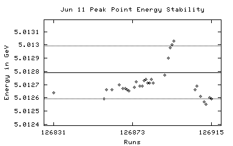 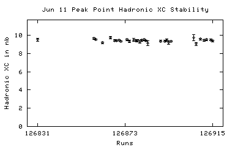
126831 06/13/2002 08:14 DataTaking 5.01264 795.97 9.43 +/- 0.37
Jun 11 Continuum Point
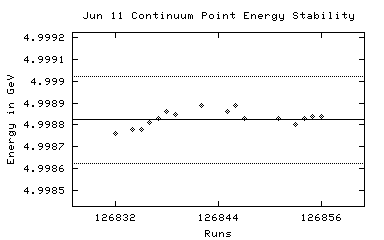 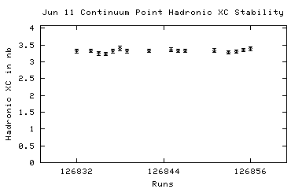
126832 06/13/2002 09:12 DataTaking 4.99876 1910.11 3.31 +/- 0.12
126834 06/13/2002 12:18 DataTaking 4.99878 2038.27 3.33 +/- 0.12
126835 06/13/2002 13:41 DataTaking 4.99878 2084.55 3.33 +/- 0.12
126836 06/13/2002 15:02 DataTaking 4.99881 2026.38 3.02 +/- 0.11
126837 06/13/2002 16:27 DataTaking 4.99883 1938.74 3.31 +/- 0.12
126838 06/13/2002 17:48 DataTaking 4.99886 784.88 3.12 +/- 0.20
126839 06/13/2002 18:39 DataTaking 4.99885 1809.10 3.26 +/- 0.14
126840 06/13/2002 19:51 SmallCal 4.99883 0.00 n/a
126841 06/13/2002 20:03 SmallCal 4.99883 0.00 n/a
126842 06/13/2002 20:11 DataTaking 4.99889 1496.22 3.38 +/- 0.14
126843 06/13/2002 21:13 SmallCal 4.99885 0.00 n/a
126844 06/13/2002 21:39 SmallCal 4.99885 n/a n/a
126845 06/13/2002 21:45 DataTaking 4.99886 1369.51 3.51 +/- 0.16
126846 06/13/2002 22:43 DataTaking 4.99889 2075.78 3.33 +/- 0.12
126847 06/14/2002 00:03 DataTaking 4.99883 1950.74 3.25 +/- 0.14
126848 06/14/2002 01:18 SmallCal 4.99880 0.00 n/a
126849 n/a n/a SmallCal n/a n/a n/a
126850 06/14/2002 01:43 SmallCal 4.99880 n/a n/a
126851 06/14/2002 01:48 DataTaking 4.99883 1228.33 3.48 +/- 0.17
126852 06/14/2002 02:38 SmallCal 4.99883 0.00 n/a
126853 06/14/2002 02:49 DataTaking 4.99880 2080.44 3.36 +/- 0.11
126854 06/14/2002 04:10 DataTaking 4.99883 2110.63 3.30 +/- 0.11
126855 06/14/2002 05:32 DataTaking 4.99884 2081.01 3.51 +/- 0.12
126856 06/14/2002 06:52 DataTaking 4.99884 2050.25 3.32 +/- 0.12
126857 n/a n/a n/a n/a n/a n/a
Jun 11 Peak Point
126858 06/14/2002 08:31 DataTaking 5.01259 2101.26 9.50 +/- 0.27
126859 06/14/2002 09:54 DataTaking 5.01266 1932.63 9.11 +/- 0.30
126862 06/14/2002 11:35 DataTaking 5.01266 1262.55 8.71 +/- 0.34
126863 06/14/2002 12:26 SmallCal 5.01267 0.00 n/a
126864 06/14/2002 12:38 SmallCal 5.01267 0.00 n/a
126865 06/14/2002 12:45 DataTaking 5.01266 57.78 12.54 +/- 1.75
126866 06/14/2002 12:51 DataTaking 5.01270 1579.97 9.56 +/- 0.32
126867 06/14/2002 13:49 SmallCal 5.01266 0.00 n/a
126868 06/14/2002 13:57 DataTaking 5.01267 2118.85 8.92 +/- 0.25
126869 06/14/2002 15:18 DataTaking 5.01267 2094.77 9.06 +/- 0.26
126870 06/14/2002 16:39 DataTaking 5.01266 2056.36 9.30 +/- 0.27
126871 06/14/2002 18:00 DataTaking 5.01265 2162.93 8.82 +/- 0.25
126872 06/14/2002 19:23 DataTaking 5.01268 n/a n/a
126873 06/14/2002 20:47 SmallCal 5.01270 n/a n/a
126874 06/14/2002 20:52 DataTaking 5.01268 1813.29 9.42 +/- 0.28
126875 06/14/2002 22:05 DataTaking 5.01272 1185.86 9.19 +/- 0.36
126876 n/a n/a n/a n/a n/a n/a
126877 06/14/2002 23:04 DataTaking 5.01269 520.60 9.42 +/- 0.50
126878 06/14/2002 23:31 DataTaking 5.01269 2139.12 8.81 +/- 0.25
126879 06/15/2002 00:58 DataTaking 5.01273 1088.60 9.26 +/- 0.36
126880 06/15/2002 01:42 DataTaking 5.01274 566.88 9.59 +/- 0.48
126881 06/15/2002 02:14 DataTaking 5.01271 2055.97 9.28 +/- 0.27
126882 06/15/2002 03:34 DataTaking 5.01271 1935.86 9.02 +/- 0.27
126883 06/15/2002 05:00 DataTaking 5.01274 1932.88 9.11 +/- 0.27
126884 06/15/2002 06:14 DataTaking 5.01271 35.81 9.15 +/- 0.27
126885 n/a n/a DataTaking n/a n/a 7.71 +/- 1.03
126886 06/15/2002 07:09 SmallCal 5.01271 0.00 n/a
126887 n/a n/a DataTaking n/a n/a n/a
126888 06/15/2002 07:48 SmallCal 5.01271 0.00 n/a
126889 06/15/2002 09:30 DataTaking 5.01283 0.03 0.00 +/- 0.00
126890 06/15/2002 09:44 DataTaking 5.01277 1785.34 8.78 +/- 0.28
126891 06/15/2002 10:59 SmallCal 5.01280 0.00 n/a
126892 06/15/2002 11:09 DataTaking 5.01290 2038.71 9.00 +/- 0.25
126893 06/15/2002 12:42 DataTaking 5.01298 1496.14 8.86 +/- 0.30
126894 06/15/2002 13:38 DataTaking 5.01300 444.36 9.61 +/- 0.57
126895 06/15/2002 14:24 DataTaking 5.01303 2280.55 9.12 +/- 0.26
126896 06/15/2002 16:08 SmallCal 5.01300 0.00 n/a
126897 06/15/2002 16:23 SmallCal 5.01300 0.00 n/a
126898 06/15/2002 16:30 DataTaking 5.01262 12.33 0.00 +/- 0.00
126899 n/a n/a DataTaking n/a n/a n/a
126900 06/15/2002 16:45 DataTaking 5.01262 4.30 0.00 +/- 0.00
126901 06/15/2002 17:03 SmallCal 5.01262 0.00 n/a
126902 06/15/2002 17:11 SmallCal 5.01262 0.00 n/a
126903 06/15/2002 17:16 DataTaking 5.01268 30.36 0.00 +/- 0.00
126904 06/15/2002 17:21 SmallCal 5.01268 0.00 n/a
126905 06/15/2002 17:42 SmallCal 5.01268 0.00 n/a
126906 06/15/2002 17:47 DataTaking 5.01266 162.88 8.44 +/- 0.76
126907 06/15/2002 18:15 DataTaking 5.01269 441.51 8.38 +/- 0.54
126908 06/15/2002 18:35 SmallCal 5.01281 0.00 n/a
126909 06/15/2002 18:52 DataTaking 5.01261 2011.59 9.54 +/- 0.24
126910 06/15/2002 20:25 DataTaking 5.01258 n/a n/a
126911 06/15/2002 22:05 DataTaking 5.01257 2235.48 8.78 +/- 0.23
126912 06/15/2002 23:37 DataTaking 5.01255 1329.48 8.86 +/- 0.32
126913 06/16/2002 00:35 DataTaking 5.01258 2274.85 8.81 +/- 0.24
126914 06/16/2002 02:11 DataTaking 5.01260 2401.12 9.08 +/- 0.24
126915 06/16/2002 03:47 DataTaking 5.01259 2432.99 8.72 +/- 0.23
126916 n/a n/a n/a n/a n/a n/a
126917 n/a n/a DataTaking n/a n/a n/a
126918 06/16/2002 07:53 SmallCal 5.01262 0.00 n/a
126919 06/16/2002 08:14 SmallCal 5.01262 0.00 n/a
126920 06/16/2002 13:48 DataTaking 5.01275 0.05 0.00 +/- 0.00
126921 06/16/2002 14:39 SmallCal 5.01277 0.00 n/a
126922 06/16/2002 14:45 DataTaking 5.01271 0.68 39.51 +/- 14.43
126923 06/16/2002 19:36 DataTaking 5.01278 1067.37 8.97 +/- 0.37
126924 06/16/2002 20:18 DataTaking 5.01275 16.03 8.96 +/- 1.16
126925 06/16/2002 20:31 DataTaking 5.01276 787.89 9.38 +/- 0.41
126926 06/16/2002 21:11 DataTaking 5.01276 2318.90 8.78 +/- 0.24
126927 06/16/2002 22:56 SmallCal 5.01273 0.00 n/a
126928 06/16/2002 23:02 DataTaking 5.01276 0.11 n/a
126929 06/16/2002 23:24 DataTaking 5.01273 1454.36 9.18 +/- 0.32
126930 06/17/2002 00:24 SmallCal 5.01278 0.00 n/a
126931 06/17/2002 00:31 DataTaking 5.01275 2491.26 9.22 +/- 0.22
126932 06/17/2002 02:19 DataTaking 5.01280 1232.30 8.85 +/- 0.27
126933 06/17/2002 03:34 DataTaking 5.01281 2426.49 9.32 +/- 0.25
126934 06/17/2002 05:09 DataTaking 5.01284 1898.88 9.48 +/- 0.29
126935 06/17/2002 06:34 DataTaking 5.01279 96.96 10.54 +/- 1.41
126936 06/17/2002 06:43 DataTaking 5.01276 2045.42 8.82 +/- 0.25
126937 06/17/2002 08:41 CosmicRun 5.01278 0.44 0.00 +/- 0.00
126938 06/17/2002 09:01 SmallCal 5.01278 0.00 n/a
126939 06/17/2002 09:06 DataTaking 0.04857 363.64 105.37 +/- 79.03
126940 n/a n/a DataTaking n/a n/a n/a
126941 06/17/2002 10:59 DataTaking 1.83081 0.00 n/a
126942 06/17/2002 15:55 CosmicRun 1.83081 0.00 0.00 +/- 0.00
126943 06/17/2002 16:43 CosmicRun 1.83081 0.03 0.00 +/- 0.00
126944 06/17/2002 16:52 CosmicRun 1.83081 n/a n/a
126945 06/17/2002 17:29 DataTaking 1.83097 51.73 0.00 +/- 0.00
126946 06/17/2002 17:46 CosmicRun 1.83097 0.03 0.00 +/- 0.00
126947 06/17/2002 17:58 DataTaking 1.83097 15.95 0.00 +/- 0.00
126948 06/17/2002 18:04 DataTaking 1.83097 0.14 n/a
126949 06/17/2002 18:34 DataTaking 1.83101 0.03 0.00 +/- 0.00
126950 06/17/2002 19:05 CosmicRun 1.83101 0.05 0.00 +/- 0.00
126951 06/17/2002 19:46 CosmicRun 1.83101 887.70 0.00 +/- 0.00
126952 06/17/2002 20:29 DataTaking 1.83090 608.63 65.81 +/- 26.87
126953 06/17/2002 20:38 SmallCal 1.83090 0.00 n/a
126954 n/a n/a n/a n/a n/a n/a
126955 06/17/2002 22:24 DataTaking 1.83099 2.03 0.00 +/- 0.00
126956 06/17/2002 23:41 DataTaking 1.83099 18.82 131.63 +/- 10.05
126957 06/18/2002 00:06 DataTaking 1.83099 13.73 106.15 +/- 10.81
126958 06/18/2002 00:54 DataTaking 1.83098 29.92 119.18 +/- 7.23
126959 06/18/2002 01:56 DataTaking 1.83099 4.93 97.75 +/- 13.79
126960 06/18/2002 03:10 DataTaking 1.83098 3.53 98.72 +/- 13.37
126961 n/a n/a DataTaking n/a n/a 103.66 +/- 16.19
126962 06/18/2002 08:21 DRBigCal 1.83098 0.00 n/a
126963 06/18/2002 09:31 SmallCal 1.83098 n/a n/a
126964 06/18/2002 09:47 SVXBigCal 1.83098 n/a n/a
126965 06/18/2002 09:51 CCBigCal 1.83098 n/a n/a
126966 06/18/2002 10:30 CCBigCal 1.83098 n/a n/a
126967 06/18/2002 10:45 CCBigCal 1.83098 n/a n/a
126968 06/18/2002 11:03 CCBigCal 0.00000 n/a n/a
126969 06/18/2002 11:19 SmallCal 0.00000 n/a n/a
126970 06/18/2002 13:54 CosmicRun 0.00000 0.00 0.00 +/- 0.00
126971 n/a n/a n/a n/a n/a n/a
126972 n/a n/a n/a n/a n/a n/a
126973 06/18/2002 14:54 SmallCal 0.00000 n/a n/a
126974 n/a n/a CCBigCal n/a n/a n/a
126975 06/18/2002 15:02 CCBigCal 0.00000 n/a n/a
126976 n/a n/a CCBigCal n/a n/a n/a
126977 06/18/2002 15:22 CCBigCal 0.00000 n/a n/a
126978 06/18/2002 15:28 CCBigCal 0.00000 n/a n/a
126979 n/a n/a SmallCal n/a n/a n/a
126980 06/18/2002 15:54 SmallCal 0.00000 n/a n/a
126981 06/18/2002 16:41 SmallCal 0.00000 n/a n/a
126982 06/18/2002 16:45 DataTaking 5.01377 0.00 0.00 +/- 0.00
126983 06/18/2002 17:02 CCBigCal 5.01377 0.00 n/a
126984 06/18/2002 17:11 CCBigCal 5.01377 0.00 n/a
126985 n/a n/a n/a n/a n/a n/a
126986 06/18/2002 17:45 DataTaking 3.68727 0.00 0.00 +/- 0.00
126987 06/18/2002 18:32 DataTaking 3.68903 3.51 0.00 +/- 0.00
126988 06/18/2002 18:44 DataTaking 3.69006 0.00 n/a
126989 06/18/2002 20:10 SmallCal 3.69007 0.00 n/a
126990 06/18/2002 20:31 DataTaking 3.69068 17.84 0.00 +/- 0.00
126991 06/18/2002 20:43 DataTaking 3.69070 113.04 0.00 +/- 0.00
126992 06/18/2002 21:38 DataTaking 3.69017 47.01 3.79 +/- 0.41
126993 06/18/2002 22:18 DataTaking 3.69017 n/a n/a
126994 06/18/2002 22:45 DataTaking 3.69015 133.86 4.18 +/- 0.45
126995 06/18/2002 23:13 DataTaking 3.69009 233.18 4.43 +/- 0.34
126996 06/18/2002 23:36 DataTaking 3.69007 253.64 4.59 +/- 0.35
126997 06/19/2002 00:05 DataTaking 3.69009 178.99 4.68 +/- 0.36
126998 06/19/2002 01:38 DataTaking 3.68914 82.63 4.49 +/- 0.49
126999 06/19/2002 02:24 DataTaking 3.68919 324.33 4.86 +/- 0.24
127000 06/19/2002 03:27 DataTaking 3.68922 353.07 5.28 +/- 0.24
127001 06/19/2002 04:41 DataTaking 3.68919 69.53 5.10 +/- 0.56
127002 06/19/2002 05:05 DataTaking 3.68919 143.45 5.12 +/- 0.40
127003 06/19/2002 05:30 DataTaking 3.68916 323.92 4.74 +/- 0.26
127004 06/19/2002 06:09 DataTaking 3.68916 552.52 5.30 +/- 0.22
127005 06/19/2002 07:04 SmallCal 3.68925 0.00 n/a
127006 06/19/2002 07:45 DataTaking 3.68916 256.36 4.94 +/- 0.31
127007 06/19/2002 09:25 CosmicRun 3.68920 0.05 4.97 +/- 0.29
127008 06/19/2002 10:45 CosmicRun 3.68920 0.03 0.00 +/- 0.00
127009 06/19/2002 12:00 CosmicRun 3.68920 0.00 0.00 +/- 0.00
127010 06/19/2002 12:48 CosmicRun 3.68920 0.00 48.64 +/- 59.57
127011 n/a n/a CosmicRun n/a n/a n/a
127012 06/19/2002 13:36 DataTaking 3.68954 0.00 n/a
127013 06/19/2002 13:40 DataTaking 3.68954 0.00 0.00 +/- 0.00
127014 06/19/2002 13:56 DataTaking 3.68945 0.08 24.31 +/- 34.38
127015 n/a n/a CosmicRun n/a n/a n/a
127016 06/19/2002 15:52 CosmicRun 3.68947 0.11 n/a
127017 06/19/2002 17:08 DataTaking 3.68937 395.67 4.91 +/- 0.27
127018 06/19/2002 17:50 SmallCal 3.68941 0.00 n/a
127019 06/19/2002 18:11 SmallCal 3.68941 0.00 n/a
127020 06/19/2002 18:16 SmallCal 3.68941 0.00 n/a
127021 06/19/2002 18:23 DataTaking 3.68940 9.01 0.00 +/- 0.00
127022 06/19/2002 18:33 DataTaking 3.68937 634.08 5.03 +/- 0.21
127023 06/19/2002 19:34 DataTaking 3.68937 96.77 5.31 +/- 0.59
127024 06/19/2002 19:56 DataTaking 3.68937 593.12 5.12 +/- 0.23
127025 06/19/2002 20:56 DataTaking 3.68940 989.86 4.98 +/- 0.16
127026 06/19/2002 22:37 DataTaking 3.68939 1008.14 4.90 +/- 0.15
127027 n/a n/a n/a n/a n/a n/a
127028 06/20/2002 00:24 DataTaking 3.68953 512.30 5.09 +/- 0.20
127029 06/20/2002 01:43 DataTaking 3.68947 1.40 5.12 +/- 0.20
127030 06/20/2002 02:12 DataTaking 3.68947 n/a n/a
127031 06/20/2002 02:51 DataTaking 3.68949 248.19 5.53 +/- 0.31
127032 06/20/2002 04:07 DataTaking 3.68943 369.45 5.28 +/- 0.29
127033 06/20/2002 04:48 DataTaking 3.68943 276.93 5.09 +/- 0.32
127034 06/20/2002 05:19 DataTaking 3.68944 763.21 5.09 +/- 0.20
127035 06/20/2002 06:26 SmallCal 3.68943 0.00 n/a
127036 06/20/2002 07:43 SmallCal 3.68943 0.00 n/a
127037 06/20/2002 12:14 CCBigCal 3.68943 0.00 n/a
127038 06/20/2002 12:24 CCBigCal 3.68943 0.00 n/a
127039 06/20/2002 12:47 CCBigCal 3.68943 0.00 n/a
127040 06/20/2002 15:44 CCBigCal 3.68943 0.00 n/a
127041 06/20/2002 15:54 CCBigCal 3.68943 0.00 n/a
127042 06/20/2002 19:12 CCBigCal 3.68943 0.00 n/a
127043 06/20/2002 19:24 CCBigCal 3.68943 0.00 n/a
127044 n/a n/a n/a n/a n/a n/a
127045 n/a n/a CosmicRun n/a n/a n/a
127046 06/20/2002 23:24 CosmicRun 3.68943 0.00 n/a
127047 06/20/2002 23:42 CosmicRun 3.68943 0.03 40.52 +/- 17.09
127048 06/21/2002 00:11 CosmicRun 3.68943 0.03 0.00 +/- 0.00
127049 06/21/2002 01:17 SmallCal 3.68943 0.00 n/a
127050 06/21/2002 01:26 CosmicRun 3.68943 0.00 n/a
127051 06/21/2002 01:41 CosmicRun 3.68943 0.08 0.00 +/- 0.00
127052 06/21/2002 02:52 CosmicRun 3.68943 0.11 81.05 +/- 16.87
127053 06/21/2002 04:06 CosmicRun 3.68943 0.19 78.84 +/- 15.70
127054 06/21/2002 05:27 CosmicRun 3.68943 0.00 82.50 +/- 17.74
127055 06/21/2002 05:57 CosmicRun 3.68943 0.19 0.00 +/- 0.00
127056 06/21/2002 06:58 SmallCal 3.68943 0.00 n/a
127057 06/21/2002 07:05 CosmicRun 3.68943 0.22 83.84 +/- 17.68
127058 06/21/2002 08:44 CosmicRun 3.68943 0.03 87.18 +/- 15.40
127059 06/21/2002 19:04 DataTaking 6.45116 940.58 2.26 +/- 0.11
127060 06/21/2002 19:49 DataTaking 4.99923 n/a n/a
127061 06/21/2002 20:17 DataTaking 4.99923 1909.95 3.07 +/- 0.11
127062 06/21/2002 21:40 DataTaking 4.99926 1934.88 3.30 +/- 0.12
127063 06/21/2002 22:56 SmallCal 4.99932 0.00 n/a
127064 06/21/2002 23:03 DataTaking 4.99929 1918.44 3.35 +/- 0.12
127065 06/22/2002 00:32 DataTaking 4.99925 1911.15 3.11 +/- 0.11
127066 06/22/2002 01:53 DataTaking 4.99919 1916.33 3.27 +/- 0.12
127067 06/22/2002 03:16 DataTaking 4.99922 1931.42 3.22 +/- 0.12
127068 06/22/2002 04:37 DataTaking 4.99918 1900.00 3.33 +/- 0.12
127069 06/22/2002 05:53 SmallCal 4.99917 0.00 n/a
127070 06/22/2002 05:59 DataTaking 4.99916 1963.86 3.23 +/- 0.11
127071 06/22/2002 07:33 DataTaking 4.99920 1640.38 3.42 +/- 0.13
127072 06/22/2002 08:46 DataTaking 4.99913 2316.66 3.28 +/- 0.11
127073 06/22/2002 10:23 DataTaking 4.99911 974.71 3.33 +/- 0.19
127074 06/22/2002 11:16 DataTaking 4.99855 n/a n/a
127075 n/a n/a CosmicRun n/a n/a n/a
127076 06/22/2002 15:37 CosmicRun 6.34491 0.00 n/a
127077 06/22/2002 15:45 CosmicRun 6.34491 0.00 n/a
127078 06/22/2002 15:59 CosmicRun 6.34491 0.00 n/a
127079 06/22/2002 16:31 CosmicRun 6.34491 0.00 0.00 +/- 0.00
127080 06/22/2002 16:38 CosmicRun 6.34491 0.00 0.00 +/- 0.00
127081 06/22/2002 17:45 CosmicRun 6.34491 0.05 0.00 +/- 0.00
127082 06/22/2002 18:13 CCBigCal 6.34491 0.00 n/a
127083 06/22/2002 18:35 CCBigCal 6.34491 0.00 n/a
127084 06/22/2002 22:18 SmallCal 6.34491 0.00 n/a
127085 n/a n/a n/a n/a n/a n/a
127086 06/22/2002 22:39 CosmicRun 6.34491 0.00 0.00 +/- 0.00
127087 06/22/2002 22:54 CosmicRun 6.34491 0.11 41.11 +/- 45.03
127088 06/22/2002 23:19 CCBigCal 6.34491 0.00 n/a
127089 06/22/2002 23:38 CCBigCal 6.34491 0.00 n/a
127090 06/22/2002 23:50 CCBigCal 6.34491 0.00 n/a
127091 06/23/2002 00:08 CCBigCal 6.34491 n/a n/a
127092 06/23/2002 00:11 SmallCal 6.34491 n/a n/a
127093 06/23/2002 00:23 SmallCal 6.34491 n/a n/a
127094 06/23/2002 00:37 CosmicRun 6.34491 0.11 0.00 +/- 0.00
127095 06/23/2002 01:07 CosmicRun 6.34491 0.08 26.23 +/- 6.56
127096 06/23/2002 10:52 SmallCal 6.34491 0.00 n/a
127097 06/23/2002 12:27 DataTaking 4.99848 990.36 3.10 +/- 0.15
127098 06/23/2002 13:25 SmallCal 4.99842 0.00 n/a
127099 06/23/2002 13:33 DataTaking 4.99842 1431.56 3.22 +/- 0.11
127100 n/a n/a DataTaking n/a n/a 3.25 +/- 0.11
127101 06/23/2002 16:31 SmallCal 4.99837 0.00 n/a
127102 n/a n/a DataTaking n/a n/a n/a
127103 06/23/2002 18:39 DataTaking 4.99861 6.05 n/a
127104 n/a n/a n/a n/a n/a n/a
127105 06/23/2002 19:08 DataTaking 4.99912 0.88 0.00 +/- 0.00
127106 06/23/2002 19:21 DataTaking 4.99859 0.00 0.00 +/- 0.00
127107 06/23/2002 19:31 DataTaking 4.99856 373.89 3.03 +/- 0.24
127108 06/23/2002 19:52 DataTaking 4.99861 1171.21 3.23 +/- 0.13
127109 06/23/2002 20:58 SmallCal 4.99856 0.00 n/a
127110 06/23/2002 21:06 DataTaking 4.99853 1687.92 3.25 +/- 0.10
127111 06/23/2002 22:43 DataTaking 4.99853 1649.51 3.37 +/- 0.10
127112 06/24/2002 00:29 DataTaking 4.99850 1660.22 3.32 +/- 0.10
127113 06/24/2002 02:09 DataTaking 4.99850 1565.53 3.16 +/- 0.11
127114 06/24/2002 03:46 DataTaking 4.99852 1698.63 3.27 +/- 0.11
127115 06/24/2002 05:21 DataTaking 4.99851 1767.15 3.21 +/- 0.11
127116 06/24/2002 06:58 DataTaking 4.99854 1340.11 3.36 +/- 0.13
127117 06/24/2002 08:27 RandomLow 4.99851 0.00 n/a
127118 06/24/2002 08:36 DataTaking 4.99852 1.32 0.00 +/- 0.00
127119 n/a n/a CosmicRun n/a n/a 2.21 +/- 2.38
127120 06/24/2002 10:11 CosmicRun 5.01323 0.08 0.00 +/- 0.00
127121 06/24/2002 17:19 SmallCal 5.01323 n/a n/a
127122 n/a n/a DataTaking n/a n/a n/a
127123 06/24/2002 18:22 CosmicRun 5.01323 64.55 0.00 +/- 0.00
127124 n/a n/a n/a n/a n/a n/a
127125 06/24/2002 18:41 CosmicRun 5.01323 9.95 11.18 +/- 1.78
127126 06/24/2002 19:32 DataTaking 3.68919 12.08 21.95 +/- 16.03
127127 06/24/2002 19:48 DataTaking 3.68923 87.45 5.89 +/- 0.66
127128 06/24/2002 20:08 DataTaking 3.68922 101.73 n/a
127129 06/24/2002 20:28 DataTaking 3.68919 57.29 5.79 +/- 0.64
127130 06/24/2002 21:12 DataTaking 3.68924 36.25 5.39 +/- 0.60
127131 06/24/2002 21:38 DataTaking 3.68925 52.16 5.21 +/- 0.57
127132 06/24/2002 22:14 DataTaking 3.68926 n/a n/a
127133 06/24/2002 22:28 DataTaking 3.68926 30.16 0.00 +/- 0.00
127134 06/24/2002 22:59 DataTaking 3.68929 66.60 4.82 +/- 0.53
127135 06/25/2002 01:07 DataTaking 3.68686 244.08 5.18 +/- 0.29
127136 06/25/2002 01:52 DataTaking 3.68688 103.26 4.39 +/- 0.34
127137 06/25/2002 02:19 DataTaking 3.68689 36.41 4.49 +/- 0.32
127138 06/25/2002 02:37 DataTaking 3.68689 152.03 5.16 +/- 0.40
127139 06/25/2002 03:05 DataTaking 3.68689 525.73 4.93 +/- 0.20
127140 06/25/2002 04:19 DataTaking 3.68689 499.89 4.79 +/- 0.20
127141 06/25/2002 05:26 DataTaking 3.68692 466.08 4.59 +/- 0.20
127142 06/25/2002 06:25 SmallCal 3.68690 0.00 n/a
127143 06/25/2002 07:13 SmallCal 3.68690 0.00 n/a
127144 n/a n/a DRBigCal n/a 0.00 n/a
127145 06/25/2002 08:24 DRBigCal 3.68690 0.00 n/a
127146 06/25/2002 08:38 DRBigCal 3.68690 0.00 n/a
127147 06/25/2002 09:32 SmallCal 3.68690 n/a n/a
127148 n/a n/a n/a n/a n/a n/a
127149 06/25/2002 09:52 RICHWire 3.68690 n/a n/a
127150 06/25/2002 10:05 DRBigCal 3.68690 n/a n/a
127151 06/25/2002 10:18 DRBigCal 3.68690 0.05 n/a
127152 n/a n/a n/a n/a n/a n/a
127153 06/25/2002 10:39 CCBigCal 3.68690 0.00 n/a
127154 06/25/2002 10:57 CCBigCal 3.68690 0.00 n/a
127155 n/a n/a CCBigCal n/a 0.00 n/a
127156 06/25/2002 11:14 CCBigCal 3.68690 n/a n/a
127157 06/25/2002 11:28 CosmicRun 3.68690 0.00 0.00 +/- 0.00
127158 06/25/2002 11:43 CCBigCal 3.68690 0.00 n/a
127159 n/a n/a CCBigCal n/a 0.00 n/a
127160 06/25/2002 12:04 CCBigCal 3.68690 0.00 n/a
127161 06/25/2002 12:20 CCBigCal 3.68690 0.00 n/a
127162 06/25/2002 12:28 CosmicRun 3.68690 0.03 37.88 +/- 16.18
127163 n/a n/a n/a n/a n/a n/a
127164 06/25/2002 12:58 CosmicRun 3.68690 n/a 0.00 +/- 0.00
127165 06/25/2002 13:11 CosmicRun 3.68690 0.00 n/a
127166 06/25/2002 13:31 CosmicRun 3.68690 0.00 n/a
127167 06/25/2002 13:34 CosmicRun 3.68690 0.03 0.00 +/- 0.00
127168 06/25/2002 14:00 CCBigCal 3.68690 0.00 n/a
127169 06/25/2002 14:20 CosmicRun 3.68690 0.00 0.00 +/- 0.00
127170 06/25/2002 14:46 CosmicRun 3.68690 0.00 0.00 +/- 0.00
127171 06/25/2002 15:02 CosmicRun 3.68690 n/a 0.00 +/- 0.00
127172 06/25/2002 15:40 CosmicRun 3.68690 0.00 121.74 +/- 133.36
127173 06/25/2002 15:47 CosmicRun 3.68690 0.03 n/a
127174 06/25/2002 16:05 CosmicRun 3.68690 1.45 0.00 +/- 0.00
127175 06/25/2002 16:37 CosmicRun 3.68690 0.00 71.61 +/- 20.11
127176 06/25/2002 16:46 CosmicRun 3.68690 0.00 0.00 +/- 0.00
127177 06/25/2002 17:32 SVXBigCal 3.68690 0.00 n/a
127178 06/25/2002 18:52 DataTaking 3.68944 0.63 0.00 +/- 0.00
127179 n/a n/a n/a n/a n/a n/a
127180 06/25/2002 19:22 DataTaking 3.68669 n/a n/a
127181 06/25/2002 19:39 DataTaking 3.68672 6.58 0.00 +/- 0.00
127182 06/25/2002 20:41 DataTaking 3.68697 48.60 8.12 +/- 9.37
127183 n/a n/a DataTaking n/a n/a n/a
127184 06/25/2002 21:03 SmallCal 3.68697 0.00 n/a
127185 06/25/2002 21:26 DataTaking 3.68722 193.89 4.80 +/- 0.53
127186 06/25/2002 21:55 DataTaking 3.68722 92.16 4.45 +/- 0.48
127187 06/25/2002 22:11 DataTaking 3.68719 194.41 6.64 +/- 0.53
127188 06/25/2002 22:37 DataTaking 3.68722 423.07 4.85 +/- 0.27
127189 06/25/2002 23:25 DataTaking 3.68722 4.19 4.94 +/- 0.24
127190 06/25/2002 23:29 DataTaking 3.68724 66.88 1.16 +/- 1.19
127191 06/26/2002 00:01 DataTaking 3.68677 726.55 4.88 +/- 0.20
127192 n/a n/a DataTaking n/a n/a 4.86 +/- 0.19
127193 06/26/2002 01:32 DataTaking 3.68680 538.79 4.99 +/- 0.25
127194 06/26/2002 02:20 SmallCal 3.68683 0.00 n/a
127195 06/26/2002 02:31 DataTaking 3.68683 739.92 4.58 +/- 0.19
127196 06/26/2002 03:43 DataTaking 3.68682 743.64 4.92 +/- 0.19
127197 06/26/2002 04:57 DataTaking 3.68684 700.71 4.88 +/- 0.20
127198 06/26/2002 06:08 DataTaking 3.68682 582.16 5.12 +/- 0.23
127199 06/26/2002 07:20 DataTaking 3.68685 480.49 5.14 +/- 0.28
127200 06/26/2002 17:49 SmallCal 3.68686 n/a n/a
127201 06/26/2002 18:11 CosmicRun 3.68686 4.63 81.74 +/- 24.89
127202 06/26/2002 18:42 DataTaking 5.01054 51.10 81.74 +/- 24.89
127203 n/a n/a DataTaking n/a n/a 0.00 +/- 0.00
June 28 High-Energy Tail Point
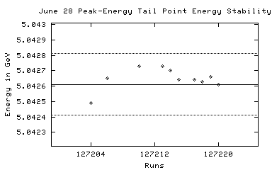 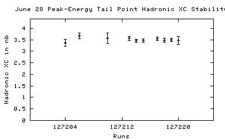
127204 06/26/2002 21:46 DataTaking 5.04249 203.67 3.30 +/- 0.37
127206 06/26/2002 23:07 DataTaking 5.04265 351.81 3.13 +/- 0.35
127207 06/26/2002 23:25 SmallCal 5.04267 0.00 n/a
127208 06/26/2002 23:35 SmallCal 5.04267 0.00 n/a
127209 06/26/2002 23:41 DataTaking 5.04268 15.53 n/a
127210 06/27/2002 00:03 DataTaking 5.04273 90.19 0.00 +/- 0.00
127211 06/27/2002 00:09 SmallCal 5.04273 0.00 n/a
127212 06/27/2002 00:14 SmallCal 5.04273 0.00 n/a
127213 06/27/2002 00:20 DataTaking 5.04273 814.38 3.59 +/- 0.17
127214 06/27/2002 01:20 DataTaking 5.04270 980.60 3.36 +/- 0.14
127215 06/27/2002 03:44 DataTaking 5.04264 967.29 3.36 +/- 0.13
127216 n/a n/a DataTaking n/a n/a 3.32 +/- 0.12
127217 06/27/2002 05:05 DataTaking 5.04264 879.92 3.48 +/- 0.15
127218 06/27/2002 06:01 DataTaking 5.04263 592.52 3.36 +/- 0.19
127219 06/27/2002 07:15 DataTaking 5.04266 709.34
n/a
127220 06/27/2002 08:05 DataTaking 5.04261 138.66 4.27 +/- 0.49
127221 06/27/2002 08:35 DataTaking 4.99857 1662.22 3.43 +/- 0.13
127222 06/27/2002 09:57 DataTaking 4.99859 1864.14 3.31 +/- 0.12
127223 06/27/2002 11:15 SmallCal 4.99860 0.00 n/a
127224 06/27/2002 12:05 DataTaking 4.99862 1209.86 n/a
127225 06/27/2002 12:56 DataTaking 4.99863 0.00 n/a
127226 06/27/2002 13:03 DataTaking 4.99860 18.27 n/a
127227 n/a n/a DataTaking n/a n/a n/a
127228 06/27/2002 13:44 DataTaking 4.99863 1369.62 3.17 +/- 0.13
127229 06/27/2002 14:49 DataTaking 4.99862 1489.84 3.17 +/- 0.13
127230 06/27/2002 15:53 DataTaking 4.99854 235.70 3.18 +/- 0.35
127231 06/27/2002 16:12 DataTaking 4.99852 1581.01 3.11 +/- 0.13
127232 06/27/2002 17:30 DataTaking 4.99805 0.00 n/a
127233 06/27/2002 17:40 DataTaking 4.99854 1581.01 n/a
127234 06/27/2002 17:54 DataTaking 4.99853 n/a n/a
127235 06/27/2002 18:55 DataTaking 4.99856 1622.47 n/a
127236 n/a n/a DataTaking n/a n/a n/a
127237 06/27/2002 20:36 DataTaking 4.99858 821.86 n/a
127238 06/27/2002 21:50 DataTaking 4.99861 1502.11 3.09 +/- 0.14
127239 06/27/2002 22:49 SmallCal 4.99864 0.00 n/a
127240 06/27/2002 23:01 DataTaking 4.99861 2080.63 3.40 +/- 0.11
127241 06/28/2002 00:22 DataTaking 4.99864 1467.92 3.24 +/- 0.15
127242 06/28/2002 04:22 DataTaking 4.99868 172.55 3.56 +/- 0.40
127243 n/a n/a DataTaking n/a n/a 3.55 +/- 0.38
127244 06/28/2002 04:38 SmallCal 4.99868 0.00 n/a
127245 06/28/2002 04:54 DataTaking 4.99865 96.63 3.81 +/- 0.43
127246 n/a n/a DataTaking n/a n/a n/a
127247 06/28/2002 05:23 DataTaking 4.99865 n/a 3.23 +/- 0.14
127248 n/a n/a DataTaking n/a n/a n/a
127249 06/28/2002 07:00 DataTaking 4.99865 983.56 3.16 +/- 0.14
127250 06/28/2002 07:53 DataTaking 4.99869 1790.11 3.16 +/- 0.12
June 28 Scan
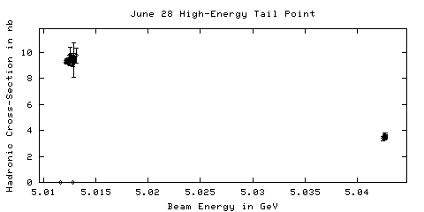
127251 06/28/2002 09:22 DataTaking 5.01244 1426.44 9.06 +/- 0.29
127256 06/28/2002 12:12 DataTaking 5.01160 24.58 0.00 +/- 0.00
127257 06/28/2002 12:17 DataTaking 5.01216 1737.42 8.93 +/- 0.25
127258 n/a n/a DataTaking n/a n/a 8.92 +/- 0.25
127259 06/28/2002 13:38 CosmicRun 5.01220 0.03 0.00 +/- 0.00
127260 06/28/2002 13:46 CosmicRun 5.01220 9.78 65.87 +/- 51.02
127261 06/28/2002 14:03 DataTaking 5.01223 1792.14 8.77 +/- 0.24
127262 06/28/2002 15:40 DataTaking 5.01223 753.04 8.24 +/- 0.37
127263 06/28/2002 16:22 DataTaking 5.01225 1036.79 9.34 +/- 0.37
127264 06/28/2002 17:14 DataTaking 5.01223 1943.97 9.14 +/- 0.27
127265 06/28/2002 18:35 SmallCal 5.01228 0.00 n/a
127266 06/28/2002 18:53 DataTaking 5.01231 1539.67 8.38 +/- 0.25
127267 06/28/2002 20:02 DataTaking 5.01241 1944.16 9.57 +/- 0.27
127268 06/28/2002 21:24 DataTaking 5.01242 1974.38 9.36 +/- 0.26
127269 06/28/2002 22:45 DataTaking 5.01239 1988.68 8.66 +/- 0.24
127270 06/29/2002 00:04 DataTaking 5.01238 2024.88 9.08 +/- 0.26
127271 06/29/2002 01:24 DataTaking 5.01241 2054.55 9.15 +/- 0.25
127272 06/29/2002 02:44 DataTaking 5.01241 2173.42 8.80 +/- 0.25
127273 06/29/2002 04:06 DataTaking 5.01245 2165.21 9.16 +/- 0.27
127274 06/29/2002 05:24 SmallCal 5.01246 0.00 n/a
127275 06/29/2002 05:38 SmallCal 5.01246 0.00 n/a
127276 06/29/2002 05:44 DataTaking 5.01246 130.00 13.44 +/- 1.91
127277 06/29/2002 05:51 SmallCal 5.01246 0.00 n/a
127278 06/29/2002 05:58 DataTaking 5.01249 1143.78 8.70 +/- 0.31
127279 06/29/2002 06:45 DataTaking 5.01246 1545.34 8.79 +/- 0.29
127280 06/29/2002 07:55 DataTaking 5.01259 1423.84 8.67 +/- 0.31
127281 06/29/2002 08:52 SmallCal 5.01262 0.00 n/a
127282 06/29/2002 08:58 DataTaking 5.01318 56.99 9.41 +/- 1.23
127283 06/29/2002 11:40 DataTaking 5.01253 309.45 9.06 +/- 0.68
127284 n/a n/a DataTaking n/a n/a n/a
127285 06/29/2002 13:17 DataTaking 5.01256 2522.79 8.96 +/- 0.23
127286 n/a n/a DataTaking n/a n/a 8.98 +/- 0.23
127287 06/29/2002 15:03 DataTaking 5.01256 1699.53 9.68 +/- 0.30
127288 06/29/2002 16:15 DataTaking 5.01256 232.52 9.08 +/- 0.68
127289 06/29/2002 16:39 DataTaking 5.01256 2497.67 9.36 +/- 0.25
127290 06/29/2002 18:15 DataTaking 5.01256 2573.97 9.32 +/- 0.25
127291 06/29/2002 19:50 DataTaking 5.01255 2509.34 8.88 +/- 0.24
127292 n/a n/a n/a n/a n/a n/a
127293 06/29/2002 21:31 SmallCal 5.01255 0.00 n/a
127294 06/29/2002 21:45 DataTaking 5.01256 2464.00 9.32 +/- 0.24
127295 06/29/2002 23:27 DataTaking 5.01259 2389.67 9.38 +/- 0.25
127296 06/30/2002 01:05 DataTaking 5.01258 1374.79 8.60 +/- 0.33
127297 06/30/2002 01:58 DataTaking 5.01259 2636.60 9.16 +/- 0.24
127298 06/30/2002 03:32 SmallCal 5.01259 0.00 n/a
127299 06/30/2002 03:36 SmallCal 5.01259 0.00 n/a
127300 n/a n/a SmallCal n/a n/a n/a
127301 06/30/2002 03:52 SmallCal 5.01259 n/a n/a
127302 06/30/2002 03:58 DataTaking 5.01259 52.11 9.98 +/- 1.32
127303 06/30/2002 04:03 SmallCal 5.01259 0.00 n/a
127304 06/30/2002 04:09 DataTaking 5.01259 1570.60 9.36 +/- 0.29
127305 06/30/2002 05:12 DataTaking 5.01255 31.23
n/a
127306 06/30/2002 05:22 DataTaking 5.01258 1168.47 8.70 +/- 0.34
127307 06/30/2002 06:11 DataTaking 5.01258 2633.18 9.07 +/- 0.24
127308 06/30/2002 07:49 DataTaking 5.01272 4656.30 9.04 +/- 0.16
127309 06/30/2002 11:11 DataTaking 5.01281 5.37 9.02 +/- 0.15
127310 06/30/2002 11:19 DataTaking 5.01289 206.22 7.21 +/- 1.32
127311 06/30/2002 11:38 DataTaking 5.01289 0.00 9.39 +/- 1.32
127312 06/30/2002 11:49 DataTaking 5.01289 2005.51 8.97 +/- 0.27
127313 06/30/2002 13:04 SmallCal 5.01287 0.00 n/a
127314 06/30/2002 13:12 DataTaking 5.01287 2573.01 8.80 +/- 0.22
127315 06/30/2002 15:14 DataTaking 5.01284 2296.63 9.26 +/- 0.25
127316 06/30/2002 16:43 DataTaking 5.01284 16.49 0.00 +/- 0.00
127317 06/30/2002 16:57 DataTaking 5.01284 2074.33 9.37 +/- 0.26
127318 06/30/2002 18:18 DataTaking 5.01281 324.74 9.00 +/- 0.67
127319 06/30/2002 18:40 DataTaking 5.01281 2493.18 9.05 +/- 0.24
127320 06/30/2002 20:34 DataTaking 5.01292 1939.26 9.16 +/- 0.27
127321 06/30/2002 22:08 DataTaking 5.01288 276.38 9.23 +/- 0.70
127322 06/30/2002 22:28 DataTaking 5.01288 2331.01 9.67 +/- 0.25
127323 06/30/2002 23:56 SmallCal 5.01292 0.00 n/a
127324 07/01/2002 00:32 SmallCal 5.01292 0.00 n/a
127325 07/01/2002 00:38 DataTaking 5.01294 1317.89 8.72 +/- 0.32
127326 07/01/2002 01:32 SmallCal 5.01291 0.00 n/a
127327 07/01/2002 01:38 DataTaking 5.01294 2580.60 9.15 +/- 0.23
127328 07/01/2002 03:14 DataTaking 5.01293 2483.34 9.31 +/- 0.24
127329 07/01/2002 04:46 DataTaking 5.01295 2342.88 9.13 +/- 0.24
127330 07/01/2002 06:23 DataTaking 5.01296 2554.27 9.41 +/- 0.24
127331 07/02/2002 08:15 DRBigCal 5.01300 0.00 n/a
127332 07/02/2002 10:21 DRBigCal 5.01300 0.00 n/a
127333 07/02/2002 12:25 SVXBigCal 5.01300 0.00 n/a
127334 n/a n/a DRBigCal n/a 0.00 n/a
127335 07/02/2002 14:13 DRBigCal 5.01300 0.00 n/a
127336 07/02/2002 14:30 DRBigCal 5.01300 0.00 n/a
127337 07/02/2002 15:00 SmallCal 0.00000 n/a n/a
127338 07/02/2002 15:54 CCBigCal 0.00000 n/a n/a
127339 07/02/2002 16:15 CCBigCal 0.00000 n/a n/a
127340 07/02/2002 16:23 DRBigCal 0.00000 0.00 n/a
127341 07/02/2002 16:31 DRBigCal 0.00000 0.00 n/a
127342 07/02/2002 16:40 SmallCal 0.00000 0.00 n/a
127343 07/02/2002 17:00 SmallCal 0.00000 n/a n/a
127344 n/a n/a DRBigCal n/a n/a n/a
127345 07/02/2002 17:28 DRBigCal 0.00000 0.00 n/a
127346 07/02/2002 18:09 DRBigCal 0.00000 0.00 n/a
127347 07/02/2002 18:26 SmallCal 0.00000 0.00 n/a
127348 07/02/2002 20:21 SmallCal 0.00000 0.00 n/a
127349 07/02/2002 20:24 SmallCal 0.00000 0.00 n/a
127350 07/02/2002 20:36 SmallCal 0.00000 0.00 n/a
127351 07/02/2002 21:51 SmallCal 0.00000 0.00 n/a
127352 07/02/2002 22:21 SmallCal 0.00000 0.00 n/a
127353 07/02/2002 23:02 SmallCal 0.00000 0.00 n/a
127354 07/02/2002 23:36 SmallCal 0.00000 0.00 n/a
127355 07/02/2002 23:57 SmallCal 0.00000 0.00 n/a
127356 n/a n/a n/a n/a n/a n/a
127357 n/a n/a n/a n/a n/a n/a
127358 n/a n/a n/a n/a n/a n/a
127359 n/a n/a n/a n/a n/a n/a
127360 n/a n/a n/a n/a n/a n/a
127361 07/03/2002 03:31 SmallCal 0.00000 n/a n/a
127362 n/a n/a n/a n/a n/a n/a
127363 n/a n/a n/a n/a n/a n/a
127364 n/a n/a n/a n/a n/a n/a
127365 07/03/2002 05:10 SmallCal 0.00000 n/a n/a
127366 07/03/2002 05:27 SmallCal 0.00000 n/a n/a
127367 n/a n/a n/a n/a n/a n/a
127368 n/a n/a n/a n/a n/a n/a
127369 n/a n/a n/a n/a n/a n/a
127370 n/a n/a n/a n/a n/a n/a
127371 07/03/2002 09:13 CosmicRun 0.00000 0.00 n/a
127372 07/03/2002 09:25 CosmicRun 0.00000 0.00 n/a
127373 07/03/2002 09:38 CosmicRun 0.00000 0.00 n/a
127374 07/03/2002 10:20 CosmicRun 0.00000 0.00 n/a
127375 07/03/2002 10:26 CosmicRun 0.00000 0.00 n/a
127376 07/03/2002 11:39 CosmicRun 0.00000 0.00 n/a
127377 07/03/2002 11:57 CosmicRun 0.00000 0.00 n/a
127378 07/03/2002 12:02 CosmicRun 0.00000 0.03 0.00 +/- 0.00
127379 07/03/2002 12:25 CosmicRun 0.00000 0.11 0.00 +/- 0.00
127380 n/a n/a CosmicRun n/a n/a 0.00 +/- 0.00
127381 07/03/2002 13:48 CosmicRun 0.00000 0.00 n/a
127382 07/03/2002 14:06 CosmicRun 0.00000 0.00 0.00 +/- 0.00
127383 07/03/2002 14:14 CosmicRun 0.00000 28.55 0.00 +/- 0.00
127384 07/03/2002 16:51 CosmicRun 0.00000 31.18 0.00 +/- 0.00
127385 n/a n/a n/a n/a n/a n/a
127386 07/03/2002 17:58 SmallCal 0.00000 n/a n/a
127387 07/03/2002 18:18 SmallCal 0.00000 n/a n/a
127388 n/a n/a n/a n/a n/a n/a
127389 07/03/2002 18:47 SmallCal 0.00000 n/a n/a
127390 07/03/2002 19:06 SmallCal 0.00000 n/a n/a
127391 07/03/2002 19:14 SmallCal 0.00000 n/a n/a
127392 n/a n/a SmallCal n/a n/a n/a
127393 07/03/2002 19:41 SmallCal 0.00000 n/a n/a
127394 07/03/2002 19:43 SmallCal 0.00000 n/a n/a
127395 n/a n/a SmallCal n/a n/a n/a
127396 07/03/2002 19:58 SmallCal 0.00000 n/a n/a
127397 07/03/2002 20:22 SmallCal 0.00000 n/a n/a
127398 n/a n/a n/a n/a n/a n/a
127399 07/03/2002 20:52 SmallCal 0.00000 n/a n/a
127400 n/a n/a n/a n/a n/a n/a
127401 n/a n/a n/a n/a n/a n/a
127402 07/03/2002 22:13 SmallCal 0.00000 n/a n/a
127403 07/03/2002 23:09 SmallCal 0.00000 n/a n/a
127404 07/03/2002 23:30 SmallCal 0.00000 n/a n/a
127405 n/a n/a n/a n/a n/a n/a
127406 07/03/2002 23:51 SmallCal 0.00000 n/a n/a
127407 07/04/2002 00:04 SmallCal 0.00000 n/a n/a
127408 07/04/2002 00:46 SmallCal 0.00000 n/a n/a
127409 07/04/2002 00:59 SmallCal 0.00000 n/a n/a
127410 07/04/2002 01:12 SmallCal 0.00000 n/a n/a
127411 07/04/2002 01:27 SmallCal 0.00000 n/a n/a
127412 07/04/2002 01:46 SmallCal 0.00000 n/a n/a
127413 07/04/2002 02:25 SmallCal 0.00000 n/a n/a
127414 n/a n/a n/a n/a n/a n/a
127415 07/04/2002 02:48 SmallCal 0.00000 n/a n/a
127416 07/04/2002 02:59 CosmicRun 0.00000 0.00 n/a
June 28 Continuum Point
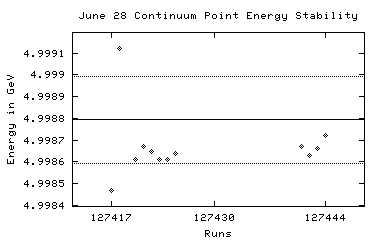 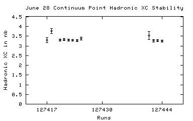
127417 07/04/2002 03:24 DataTaking 4.99847 259.15 3.32 +/- 0.19
127418 07/04/2002 03:43 DataTaking 4.99912 283.84 3.48 +/- 0.20
127420 07/04/2002 08:06 DataTaking 4.99861 1327.26 3.19 +/- 0.08
127421 07/04/2002 09:26 DataTaking 4.99867 1476.55 3.28 +/- 0.09
127422 07/04/2002 10:48 DataTaking 4.99865 1527.29 3.25 +/- 0.09
127423 07/04/2002 12:22 DataTaking 4.99861 1627.26 3.12 +/- 0.08
127424 07/04/2002 13:42 DataTaking 4.99861 1530.19 3.13 +/- 0.08
127425 07/04/2002 15:15 DataTaking 4.99864 834.55
n/a
127426 07/04/2002 15:58 SmallCal 4.99864 0.00 n/a
127427 n/a n/a n/a n/a n/a n/a
127428 n/a n/a CosmicRun n/a n/a n/a
127429 07/04/2002 16:38 CosmicRun 4.99864 0.00 n/a
127430 n/a n/a CosmicRun n/a n/a n/a
127431 n/a n/a n/a n/a n/a n/a
127432 n/a n/a SmallCal n/a n/a n/a
127433 n/a n/a SmallCal n/a 0.00 n/a
127434 n/a n/a SmallCal n/a n/a n/a
127435 n/a n/a SmallCal n/a n/a n/a
127436 n/a n/a n/a n/a n/a n/a
127437 07/04/2002 23:42 SmallCal 4.99864 n/a n/a
127438 07/04/2002 23:48 SmallCal 4.99864 n/a n/a
127439 07/05/2002 00:07 SmallCal 4.99864 n/a n/a
127440 07/05/2002 00:34 DataTaking 4.99865 6.44 0.00 +/- 0.00
127441 07/05/2002 00:38 DataTaking 4.99867 106.60
n/a
127442 07/05/2002 00:49 DataTaking 4.99863 1285.78 3.28 +/- 0.10
127443 07/05/2002 01:57 DataTaking 4.99866 1676.77 3.29 +/- 0.09
127444 07/05/2002 03:21 DataTaking 4.99872 1818.74
n/a
127445 07/05/2002 05:33 SmallCal 4.99875 0.00 n/a
127446 07/05/2002 05:54 SmallCal 4.99875 0.00 n/a
127447 07/05/2002 06:09 SmallCal 4.99875 0.00 n/a
127448 n/a n/a DataTaking n/a n/a n/a
127449 07/05/2002 06:25 SmallCal 4.99875 0.00 n/a
127450 n/a n/a n/a n/a n/a n/a
127451 07/05/2002 06:56 CosmicRun 4.99875 0.03 0.00 +/- 0.00
127452 07/05/2002 07:05 SmallCal 4.99875 0.00 n/a
127453 07/05/2002 07:50 SmallCal 0.00000 n/a n/a
127454 07/05/2002 08:23 CosmicRun 0.00000 0.00 0.00 +/- 0.00
127455 07/05/2002 08:53 DataTaking 4.99845 0.82 0.00 +/- 0.00
127456 n/a n/a DataTaking n/a n/a 0.00 +/- 0.00
127457 n/a n/a DataTaking n/a n/a n/a
127458 07/05/2002 10:15 SmallCal 5.01289 0.00 n/a
127459 07/05/2002 10:20 DataTaking 5.01292 1113.75 8.62 +/- 0.28
127460 07/05/2002 11:16 DataTaking 5.01297 1924.96 8.90 +/- 0.24
127461 07/05/2002 12:38 DataTaking 5.01297 2032.44 8.82 +/- 0.25
127462 07/05/2002 13:59 DataTaking 5.01298 2051.56 9.19 +/- 0.26
127463 07/05/2002 15:16 SmallCal 5.01296 0.00 n/a
127464 n/a n/a n/a n/a n/a 9.16 +/- 0.25
127465 07/05/2002 15:30 DataTaking 5.01296 1832.52 8.91 +/- 0.26
127466 07/05/2002 16:42 DataTaking 5.01302 161.70 9.21 +/- 0.85
127467 07/05/2002 16:56 DataTaking 5.01302 1575.45 n/a
127468 07/05/2002 18:03 SmallCal 5.01300 0.00 n/a
127469 n/a n/a n/a n/a n/a n/a
127470 07/05/2002 18:29 DataTaking 5.01300 153.37 9.15 +/- 0.84
127471 07/05/2002 18:45 DataTaking 5.01300 167.78 8.66 +/- 0.79
127472 07/05/2002 19:10 DataTaking 5.01303 1222.55 9.43 +/- 0.32
127473 07/05/2002 20:09 DataTaking 5.01299 1906.11 8.82 +/- 0.25
127474 07/05/2002 21:25 DataTaking 5.01331 0.00 n/a
127475 07/05/2002 21:30 DataTaking 5.01265 15.18 n/a
127476 07/05/2002 21:42 DataTaking 5.01265 1.67 0.00 +/- 0.00
127477 07/05/2002 21:53 DataTaking 5.01265 1406.16 8.85 +/- 0.30
127478 07/05/2002 22:52 DataTaking 5.01264 2052.44 9.10 +/- 0.26
127479 07/06/2002 00:16 DataTaking 5.01264 2104.36 9.06 +/- 0.26
127480 07/06/2002 01:41 DataTaking 5.01266 161.34 9.83 +/- 0.92
127481 07/06/2002 02:00 DataTaking 5.01266 1994.77 9.05 +/- 0.26
127482 07/06/2002 03:24 DataTaking 5.01263 1932.36 9.05 +/- 0.27
127483 07/06/2002 04:44 DataTaking 5.01263 1886.44 8.95 +/- 0.27
127484 07/06/2002 05:59 SmallCal 5.01272 0.00 n/a
127485 07/06/2002 06:14 SmallCal 5.01272 0.00 n/a
127486 07/06/2002 06:19 DataTaking 5.01266 44.79 0.00 +/- 0.00
127487 07/06/2002 06:25 SmallCal 5.01266 0.00 n/a
127488 07/06/2002 06:31 DataTaking 5.01266 1190.30 8.91 +/- 0.32
127489 07/06/2002 07:27 DataTaking 5.01268 1972.66 9.30 +/- 0.28
127490 n/a n/a DataTaking n/a n/a 9.24 +/- 0.27
127491 07/06/2002 08:42 SmallCal 5.01272 0.00 n/a
127492 07/06/2002 08:48 DataTaking 5.01269 2414.66 9.01 +/- 0.23
127493 07/06/2002 10:21 DataTaking 5.01264 2461.70 9.40 +/- 0.24
127494 07/06/2002 11:56 DataTaking 5.01267 27.84 10.21 +/- 1.36
127495 07/06/2002 12:11 DataTaking 5.01270 0.22 0.00 +/- 0.00
127496 n/a n/a DataTaking n/a n/a n/a
127497 07/06/2002 13:21 DataTaking 5.01269 83.62 0.00 +/- 0.00
127498 07/06/2002 13:31 DataTaking 5.01267 739.26 9.00 +/- 0.44
127499 07/06/2002 14:09 DataTaking 5.01267 1116.74 9.15 +/- 0.34
127500 07/06/2002 15:07 DataTaking 5.01267 0.05 0.00 +/- 0.00
127501 07/06/2002 15:28 DataTaking 5.01266 296.00 9.19 +/- 0.69
127502 07/06/2002 16:03 DataTaking 5.01265 1474.00 9.06 +/- 0.30
127503 07/06/2002 17:06 DataTaking 5.01265 457.94 10.11 +/- 0.67
127504 07/06/2002 17:25 DataTaking 5.01265 1541.12 8.73 +/- 0.29
127505 07/06/2002 18:33 SmallCal 5.01264 0.00 n/a
127506 07/06/2002 18:43 DataTaking 5.01264 2133.34 9.08 +/- 0.26
127507 07/06/2002 20:20 DataTaking 5.01265 2528.47 9.23 +/- 0.23
127508 07/06/2002 22:00 DataTaking 5.01262 2698.58 8.97 +/- 0.22
127509 07/06/2002 23:47 DataTaking 5.01265 2473.64 9.28 +/- 0.24
127510 07/07/2002 01:24 DataTaking 5.01265 1409.26 9.41 +/- 0.34
127511 07/07/2002 03:04 DataTaking 5.01267 176.57 8.47 +/- 0.77
127512 07/07/2002 03:21 DataTaking 5.01268 2319.75 9.32 +/- 0.25
127513 07/07/2002 04:57 DataTaking 5.01272 2216.60 9.19 +/- 0.26
127514 07/07/2002 06:20 SmallCal 5.01271 0.00 n/a
127515 07/07/2002 06:31 SmallCal 5.01271 0.00 n/a
127516 07/07/2002 06:38 DataTaking 5.01268 51.89 0.00 +/- 0.00
127517 07/07/2002 06:43 SmallCal 5.01268 0.00 n/a
127518 07/07/2002 06:48 DataTaking 5.01271 2005.01 9.12 +/- 0.26
127519 07/07/2002 08:09 DataTaking 5.01271 115.26 11.45 +/- 1.57
127520 07/07/2002 08:23 DataTaking 5.01269 0.00 n/a
127521 07/07/2002 08:41 DataTaking 5.01268 1722.85 9.57 +/- 0.30
127522 07/07/2002 09:49 SmallCal 5.01268 0.00 n/a
127523 07/07/2002 09:56 DataTaking 5.01265 2479.92 9.19 +/- 0.23
127524 07/07/2002 11:31 DataTaking 5.01268 2474.88 8.86 +/- 0.23
127525 07/07/2002 13:07 DataTaking 5.01328 710.88 8.92 +/- 0.47
127526 07/07/2002 13:42 SmallCal 5.01324 0.00 n/a
127527 07/07/2002 13:48 DataTaking 5.01328 0.00 n/a
127528 07/07/2002 16:17 SmallCal 5.01264 n/a n/a
127529 07/07/2002 16:29 DataTaking 5.01264 0.05 n/a
127530 07/07/2002 16:39 DataTaking 5.01263 0.00 n/a
127531 07/07/2002 16:49 DataTaking 5.01266 2464.93 9.01 +/- 0.24
127532 07/07/2002 18:25 DataTaking 5.01264 2362.66 8.52 +/- 0.24
127533 07/07/2002 19:54 SmallCal 5.01264 0.00 n/a
127534 07/07/2002 20:05 DataTaking 5.01263 2432.44 8.88 +/- 0.22
127535 07/07/2002 21:42 DataTaking 5.01265 754.74 9.25 +/- 0.43
127536 07/07/2002 22:17 DataTaking 5.01265 1614.47 8.90 +/- 0.29
127537 07/07/2002 23:24 DataTaking 5.01265 2468.33 8.77 +/- 0.23
127538 07/08/2002 01:01 DataTaking 5.01265 2445.86 9.03 +/- 0.23
127539 07/08/2002 02:45 DataTaking 5.01326 1533.78 8.85 +/- 0.30
127540 07/08/2002 03:44 DataTaking 5.01325 735.26 9.20 +/- 0.42
127541 n/a n/a DataTaking n/a n/a 9.36 +/- 0.41
127542 07/08/2002 04:34 DataTaking 5.01328 1877.53 8.88 +/- 0.26
127543 07/08/2002 05:47 SmallCal 5.01264 0.00 n/a
127544 07/08/2002 05:56 DataTaking 5.01268 2489.18 9.09 +/- 0.23
127545 07/08/2002 07:34 DataTaking 5.01272 1009.45 9.05 +/- 0.35
127546 07/08/2002 14:44 CosmicRun 5.01267 0.00 0.00 +/- 0.00
127547 07/08/2002 19:57 CosmicRun 5.01267 0.16 52.69 +/- 58.91
127548 07/08/2002 21:07 CosmicRun 5.01267 n/a n/a
127549 07/08/2002 23:28 CosmicRun 5.01267 0.03 0.00 +/- 0.00
127550 07/09/2002 06:15 DRBigCal 5.01267 0.00 n/a
127551 n/a n/a n/a n/a n/a n/a
127552 07/09/2002 06:26 DRBigCal 5.01267 0.00 n/a
127553 07/09/2002 06:42 DRBigCal 5.01267 0.00 n/a
127554 07/09/2002 06:54 DRBigCal 5.01267 0.00 n/a
127555 07/09/2002 07:20 DRBigCal 5.01267 0.00 n/a
127556 07/09/2002 07:30 CCBigCal 5.01267 0.00 n/a
127557 07/09/2002 07:43 SVXBigCal 5.01267 0.00 n/a
127558 07/09/2002 07:57 SVXBigCal 5.01267 0.00 n/a
127559 n/a n/a CosmicRun n/a n/a n/a
127560 07/09/2002 10:03 CosmicRun 5.01267 0.05 0.00 +/- 0.00
127561 07/09/2002 12:03 RICHWire 5.01267 n/a n/a
127562 07/09/2002 12:17 RICHWire 5.01267 n/a n/a
127563 07/09/2002 12:22 SmallCal 5.01267 n/a n/a
127564 n/a n/a CCBigCal n/a n/a n/a
127565 07/09/2002 16:35 CCBigCal 5.01267 0.00 n/a
127566 07/09/2002 17:03 DataTaking 1.82940 0.08 0.00 +/- 0.00
127567 07/09/2002 19:57 DataTaking 5.04533 0.14 0.00 +/- 0.00
127568 n/a n/a DataTaking n/a n/a n/a
127569 07/09/2002 22:02 CosmicRun 5.00363 0.08 0.00 +/- 0.00
127570 07/10/2002 00:29 CosmicRun 5.00363 0.05 0.00 +/- 0.00
127571 07/10/2002 01:41 CosmicRun 5.00363 0.00 64.63 +/- 23.64
127572 07/10/2002 01:48 CosmicRun 5.00363 n/a n/a
127573 n/a n/a CosmicRun n/a n/a n/a
127574 07/10/2002 03:09 CosmicRun 5.00363 0.16 0.00 +/- 0.00
127575 07/10/2002 04:22 CosmicRun 5.00363 0.00 73.65 +/- 21.38
127576 07/10/2002 04:57 SmallCal 5.00363 0.00 n/a
127577 07/10/2002 05:06 CosmicRun 5.00363 0.08 71.39 +/- 24.58
127578 07/10/2002 07:12 CosmicRun 5.00363 0.05 67.99 +/- 19.86
127579 07/10/2002 10:10 CosmicRun 5.00363 0.00 53.98 +/- 17.39
127580 07/10/2002 10:57 CosmicRun 5.00363 0.08 57.54 +/- 15.48
127581 07/10/2002 11:13 CCBigCal 5.00363 0.00 n/a
127582 07/10/2002 11:24 CosmicRun 5.00363 0.05 44.07 +/- 29.01
127583 07/10/2002 12:14 CosmicRun 5.00363 0.00 0.00 +/- 0.00
127584 07/10/2002 13:01 CosmicRun 5.00363 0.00 0.00 +/- 0.00
127585 n/a n/a n/a n/a n/a n/a
127586 07/10/2002 15:53 DataTaking 13.46630 0.22 0.00 +/- 0.00
127587 07/10/2002 19:33 DataTaking 5.01062 0.05 0.00 +/- 0.00
July 11 Scan
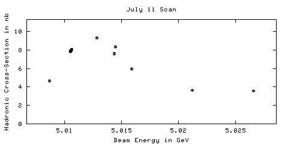
127588 07/10/2002 19:42 DataTaking 5.01063 1014.14 7.81 +/- 0.23
127589 07/10/2002 21:03 DataTaking 5.01054 1747.95 7.64 +/- 0.23
127592 07/10/2002 22:32 DataTaking 5.01057 1831.51 7.50 +/- 0.21
127593 n/a n/a n/a n/a n/a n/a
127594 07/11/2002 00:12 DataTaking 5.01441 987.56 7.35 +/- 0.32
127595 07/11/2002 01:31 SmallCal 5.01444 0.00 n/a
127596 07/11/2002 01:43 SmallCal 5.01444 0.00 n/a
127597 07/11/2002 02:07 DataTaking 5.02664 0.00
n/a
127598 07/11/2002 02:11 DataTaking 5.02658 981.53 3.39 +/- 0.16
127599 07/11/2002 03:04 SmallCal 5.02658 0.00 n/a
127600 07/11/2002 03:28 DataTaking 5.00871 956.38 4.72 +/- 0.17
127601 07/11/2002 04:40 DataTaking 5.01531 1245.26 5.34 +/- 0.18
127602 07/11/2002 05:55 DataTaking 5.02059 1128.77 3.70 +/- 0.14
127603 07/11/2002 07:30 DataTaking 5.00665 n/a n/a
127604 n/a n/a DataTaking n/a n/a n/a
127605 n/a n/a DataTaking n/a n/a n/a
127606 07/11/2002 09:05 DataTaking 5.01765 1201.10 4.17 +/- 0.16
127607 07/11/2002 10:04 SmallCal 5.01827 0.00 n/a
127608 n/a n/a n/a n/a n/a n/a
127609 07/11/2002 10:27 SmallCal 5.01827 n/a n/a
127610 07/11/2002 10:33 DataTaking 5.01057 1445.12 7.35 +/- 0.23
127611 07/11/2002 12:21 DataTaking 5.0106 1728.38 7.73 +/- 0.22
127612 07/11/2002 13:56 DataTaking 5.01055 1947.32
n/a
127613 07/11/2002 15:38 DataTaking 5.01447 2012.74 7.92 +/- 0.24
127614 07/11/2002 16:56 SmallCal 5.01391 0.00 n/a
127615 07/11/2002 17:20 DataTaking 5.01288 1915.40 9.07 +/- 0.27
July 11 Continuum Point
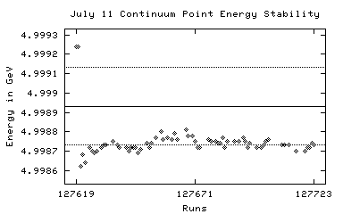 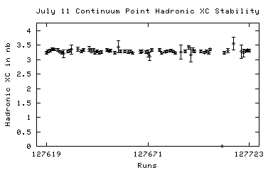
127616 07/11/2002 18:35 SmallCal 5.01285 0.00 n/a
127617 n/a n/a DataTaking n/a n/a 9.12 +/- 0.27
127618 n/a n/a n/a n/a n/a n/a
127619 07/11/2002 19:13 DataTaking 4.99924 1420.41 3.21 +/- 0.13
127620 07/11/2002 20:14 DataTaking 4.99924 2129.23 3.30 +/- 0.11
127621 07/11/2002 21:35 DataTaking 4.99862 2009.56 3.02 +/- 0.11
127622 07/11/2002 22:57 DataTaking 4.99868 2202.38 3.36 +/- 0.11
127623 07/12/2002 00:22 DataTaking 4.99864 2547.01 3.37 +/- 0.11
127624 07/12/2002 02:03 SmallCal 4.99867 0.00 n/a
127625 07/12/2002 04:03 DataTaking 4.99872 1992.19 3.09 +/- 0.11
127626 07/12/2002 05:22 DataTaking 4.99870 2183.92 3.57 +/- 0.13
127627 07/12/2002 06:41 DataTaking 4.99869 1780.96 3.31 +/- 0.14
127628 07/12/2002 08:06 DataTaking 4.99870 241.94 2.95 +/- 0.33
127629 n/a n/a DataTaking n/a n/a n/a
127630 07/12/2002 08:32 DataTaking 4.99872 1345.34 3.39 +/- 0.14
127631 07/12/2002 09:27 DataTaking 4.99873 2162.25 3.52 +/- 0.13
127632 07/12/2002 10:47 DataTaking 4.99873 166.22 3.56 +/- 0.40
127633 07/12/2002 10:57 SmallCal 4.99873 0.00 n/a
127634 07/12/2002 11:07 SmallCal 4.99873 0.00 n/a
127635 07/12/2002 11:12 DataTaking 4.99875 922.00 3.23 +/- 0.21
127636 07/12/2002 11:47 SmallCal 4.99875 0.00 n/a
127637 07/12/2002 12:10 DataTaking 4.99873 2199.21 3.31 +/- 0.11
127638 07/12/2002 13:36 DataTaking 4.99872 1796.52 3.38 +/- 0.13
127639 n/a n/a DataTaking n/a n/a n/a
127640 n/a n/a n/a n/a n/a n/a
127641 07/12/2002 15:17 DataTaking 4.99872 506.19
n/a
127642 07/12/2002 15:44 DataTaking 4.99870 643.32 3.30 +/- 0.18
127643 07/12/2002 16:17 DataTaking 4.99872 2310.22 3.30 +/- 0.11
127644 07/12/2002 17:47 DataTaking 4.99872 2226.90 3.08 +/- 0.11
127645 07/12/2002 19:08 DataTaking 4.99872 2193.45 3.25 +/- 0.11
127646 07/12/2002 20:29 DataTaking 4.99869 2097.73 3.24 +/- 0.11
127647 07/12/2002 21:50 DataTaking 4.99871 2047.78
n/a
127648 n/a n/a n/a n/a n/a n/a
127649 07/12/2002 23:11 DataTaking 4.99874 0.11 0.00 +/- 0.00
127650 07/12/2002 23:24 DataTaking 4.99874 1724.60 3.10 +/- 0.12
127651 07/13/2002 00:31 DataTaking 4.99872 2259.75 3.35 +/- 0.12
127652 07/13/2002 01:51 DataTaking 4.99874 2170.03 3.18 +/- 0.12
127653 n/a n/a n/a n/a n/a n/a
127654 07/13/2002 03:16 DataTaking 4.99877 1566.00 3.22 +/- 0.14
127655 07/13/2002 04:12 SmallCal 4.99877 0.00 n/a
127656 07/13/2002 04:17 DataTaking 4.99880 107.48 3.22 +/- 0.14
127657 07/13/2002 04:30 DataTaking 4.99876 2229.89 3.13 +/- 0.11
127658 07/13/2002 05:52 DataTaking 4.99873 202.16 2.89 +/- 0.29
127659 07/13/2002 06:03 DataTaking 4.99877 1851.70 3.17 +/- 0.13
127660 07/13/2002 07:10 DataTaking 4.99876 773.32 3.80 +/- 0.43
127661 07/13/2002 07:43 DataTaking 4.99876 1145.10 3.20 +/- 0.18
127662 07/13/2002 08:29 DataTaking 4.99879 2606.52 3.44 +/- 0.12
127663 07/13/2002 10:05 DataTaking 4.99876 2613.21 3.32 +/- 0.12
127664 07/13/2002 11:55 DataTaking 4.99875 371.73 3.27 +/- 0.37
127665 n/a n/a n/a n/a n/a n/a
127666 n/a n/a n/a n/a n/a n/a
127667 07/13/2002 12:54 DataTaking 4.99881 785.18 3.18 +/- 0.20
127668 07/13/2002 13:29 DataTaking 4.99878 2464.63 3.21 +/- 0.12
127669 07/13/2002 14:56 SmallCal 4.99878 0.00 n/a
127670 07/13/2002 15:09 DataTaking 4.99878 1819.56 3.22 +/- 0.12
127671 07/13/2002 16:24 DataTaking 4.99875 13.10 3.22 +/- 0.12
127672 07/13/2002 16:32 DataTaking 4.99872 174.66 3.06 +/- 0.34
127673 07/13/2002 16:45 DataTaking 4.99872 2448.49 3.17 +/- 0.11
127674 07/13/2002 18:13 SmallCal 4.99879 0.00 n/a
127675 n/a n/a SmallCal n/a n/a n/a
127676 07/13/2002 18:35 SmallCal 4.99879 0.00 n/a
127677 07/13/2002 18:41 DataTaking 4.99876 1891.40 3.16 +/- 0.12
127678 07/13/2002 19:55 DataTaking 4.99875 2401.51 3.19 +/- 0.11
127679 07/13/2002 21:23 SmallCal 4.99880 0.00 n/a
127680 07/13/2002 21:31 DataTaking 4.99875 2525.29 3.20 +/- 0.10
127681 07/13/2002 23:07 DataTaking 4.99874 2544.36 3.22 +/- 0.10
127682 07/14/2002 00:42 DataTaking 4.99874 2476.60 3.27 +/- 0.11
127683 07/14/2002 02:17 DataTaking 4.99877 2543.04 3.10 +/- 0.10
127684 07/14/2002 03:51 DataTaking 4.99872 2580.49 3.49 +/- 0.11
127685 07/14/2002 05:26 DataTaking 4.99875 2472.74 3.16 +/- 0.11
127686 07/14/2002 06:54 SmallCal 4.99872 0.00 n/a
127687 07/14/2002 07:04 SmallCal 4.99872 0.00 n/a
127688 07/14/2002 07:09 DataTaking 4.99875 68.27 0.00 +/- 0.00
127689 07/14/2002 07:16 SmallCal 4.99875 0.00 n/a
127690 07/14/2002 07:22 DataTaking 4.99875 1858.41 3.21 +/- 0.11
127691 07/14/2002 08:36 DataTaking 4.99874 787.15 3.47 +/- 0.23
127692 07/14/2002 09:08 DataTaking 4.99877 1447.42 3.17 +/- 0.13
127693 07/14/2002 10:12 DataTaking 4.99875 68.79 3.14 +/- 0.13
127694 07/14/2002 10:22 DataTaking 4.99872 916.71 3.05 +/- 0.20
127695 07/14/2002 10:54 DataTaking 4.99874 1462.03 3.11 +/- 0.14
127696 07/14/2002 11:54 SmallCal 4.99872 0.00 n/a
127697 07/14/2002 12:05 SmallCal 4.99872 0.00 n/a
127698 07/14/2002 12:11 DataTaking 4.99872 1830.27 3.33 +/- 0.13
127699 07/14/2002 13:21 SmallCal 4.99871 0.00 n/a
127700 07/14/2002 13:31 DataTaking 4.99872 2550.60 3.33 +/- 0.10
127701 07/14/2002 15:06 DataTaking 4.99873 2537.92 3.27 +/- 0.11
127702 07/14/2002 16:44 DataTaking 4.99875 2511.92 3.04 +/- 0.10
127703 07/14/2002 18:21 DataTaking 4.99876 2718.22 3.36 +/- 0.10
127704 07/14/2002 20:05 DataTaking 4.99873 1386.49 2.98 +/- 0.15
127705 n/a n/a n/a n/a n/a n/a
127706 n/a n/a DataTaking n/a n/a n/a
127707 n/a n/a n/a n/a n/a n/a
127708 07/14/2002 21:36 SmallCal 4.99876 n/a n/a
127709 07/14/2002 21:41 DataTaking 4.99873 10.05 0.00 +/- 0.00
127710 07/14/2002 21:55 DataTaking 4.99873 2147.51 3.21 +/- 0.12
127711 07/14/2002 23:17 DataTaking 4.99872 1405.59 3.18 +/- 0.16
127712 07/15/2002 00:14 DataTaking 4.99873 791.23 3.16 +/- 0.20
127713 07/15/2002 00:49 SmallCal 4.99870 0.00 n/a
127714 07/15/2002 01:11 SmallCal 4.99870 n/a n/a
127715 07/15/2002 01:36 DataTaking 4.99870 104.71 0.00 +/- 0.00
127716 n/a n/a SmallCal n/a n/a n/a
127717 n/a n/a SmallCal n/a n/a n/a
127718 07/15/2002 01:58 SmallCal 4.99870 n/a n/a
127719 07/15/2002 02:03 DataTaking 4.99870 75.37 0.00 +/- 0.00
127720 07/15/2002 02:11 DataTaking 4.99872 233.81 3.10 +/- 0.34
127721 07/15/2002 02:25 DataTaking 4.99872 2615.92 3.26 +/- 0.10
127722 07/15/2002 04:00 DataTaking 4.99874 2368.38 3.32 +/- 0.12
127723 07/15/2002 05:26 DataTaking 4.99873 2083.78 3.26 +/- 0.14
127724 07/15/2002 06:39 SmallCal 4.99874 0.00 n/a
127725 07/15/2002 06:47 DataTaking 4.99877 2194.03 3.42 +/- 0.12
127726 n/a n/a DataTaking n/a n/a 3.42 +/- 0.12
127727 07/15/2002 11:33 CosmicRun 4.99877 172.99 165.57 +/- 60.83
127728 07/15/2002 16:46 CosmicRun 4.99877 63.67 0.00 +/- 0.00
127729 07/15/2002 17:12 DataTaking 1.83082 n/a n/a
127730 07/15/2002 18:13 CosmicRun 1.83082 0.00 0.00 +/- 0.00
127731 07/15/2002 21:50 DataTaking 1.83078 6.99 n/a
127732 n/a n/a DataTaking n/a n/a n/a
127733 n/a n/a DataTaking n/a n/a n/a
127734 07/15/2002 22:30 DataTaking 1.83078 0.00 n/a
127735 07/15/2002 22:46 DataTaking 1.83082 40.36 106.17 +/- 15.29
127736 07/15/2002 23:06 DataTaking 1.83083 10.82 115.91 +/- 14.71
127737 07/15/2002 23:29 DataTaking 1.83083 65.34 124.99 +/- 18.81
127738 n/a n/a DataTaking n/a n/a 130.21 +/- 18.10
127739 07/16/2002 03:07 DataTaking 1.83081 19.62 83.68 +/- 11.37
127740 07/16/2002 03:43 DataTaking 1.83082 n/a n/a
127741 n/a n/a RandomLow n/a n/a n/a
127742 n/a n/a RandomLow n/a n/a n/a
127743 07/16/2002 09:47 RandomLow 1.83080 0.00 n/a
127744 07/16/2002 10:09 RandomLow 1.83080 0.00 n/a
127745 07/16/2002 10:30 RandomLow 1.83080 0.00 n/a
127746 07/16/2002 10:32 DataTaking 1.83080 0.00 n/a
127747 07/16/2002 10:37 DataTaking 1.83080 0.05 n/a
127748 07/16/2002 11:55 CCBigCal 1.83080 n/a n/a
127749 07/16/2002 11:59 SmallCal 1.83080 n/a n/a
127750 07/16/2002 12:04 RICHWire 1.83080 n/a n/a
127751 07/16/2002 12:13 RICHWire 1.83080 n/a n/a
127752 07/16/2002 12:16 DRBigCal 1.83080 0.00 n/a
127753 n/a n/a n/a n/a n/a n/a
127754 07/16/2002 12:36 DRBigCal 1.83080 0.00 n/a
127755 07/16/2002 12:39 RICHWire 1.83080 0.00 n/a
127756 07/16/2002 13:12 SVXBigCal 1.83080 0.00 n/a
127757 07/16/2002 15:54 CCBigCal 1.83080 n/a n/a
127758 07/16/2002 16:15 CosmicRun 1.83080 0.00 0.00 +/- 0.00
127759 07/16/2002 17:39 DataTaking 5.17656 3.95 0.00 +/- 0.00
127760 n/a n/a DataTaking n/a n/a 0.30 +/- 0.30
127761 07/17/2002 00:42 DataTaking 5.17642 492.08 5.08 +/- 0.22
127762 07/17/2002 01:27 DataTaking 5.17640 299.20 5.71 +/- 0.35
127763 07/17/2002 01:47 SmallCal 5.17639 0.00 n/a
127764 07/17/2002 02:01 DataTaking 5.17641 312.63 5.52 +/- 0.33
127765 07/17/2002 02:50 DataTaking 5.17645 366.82 4.86 +/- 0.33
127766 07/17/2002 03:17 DataTaking 5.17643 1238.25 4.97 +/- 0.16
127767 07/17/2002 05:02 DataTaking 5.17641 986.30 5.28 +/- 0.18
127768 07/17/2002 06:06 DataTaking 5.17668 883.59 4.74 +/- 0.18
127769 07/17/2002 07:05 DataTaking 5.17643 640.58 5.30 +/- 0.24
127770 07/17/2002 07:42 DataTaking 5.17646 203.43 5.22 +/- 0.36
127771 07/17/2002 10:13 CosmicRun 5.17649 0.03 0.00 +/- 0.00
127772 07/17/2002 10:29 CosmicRun 5.17649 0.00 21.62 +/- 13.55
127773 07/17/2002 10:38 DataTaking 5.17622 0.00 0.00 +/- 0.00
127774 07/17/2002 10:44 CosmicRun 5.17622 n/a n/a
127775 07/17/2002 11:01 CosmicRun 5.17622 20.27 0.00 +/- 0.00
127776 07/17/2002 11:38 CosmicRun 5.17622 0.00 81.18 +/- 32.93
127777 07/17/2002 11:51 CosmicRun 5.17622 0.08 32.12 +/- 16.90
127778 07/17/2002 12:30 CosmicRun 5.17622 1.18 n/a
127779 n/a n/a CosmicRun n/a 0.00 n/a
127780 07/17/2002 12:56 CosmicRun 5.17622 41.92 2.41 +/- 0.68
127781 07/17/2002 13:18 CosmicRun 5.17622 27.51 2.41 +/- 0.68
127782 07/17/2002 14:20 CosmicRun 5.17622 0.44 1.73 +/- 0.30
127783 07/17/2002 14:31 CosmicRun 5.17622 2.47 6.18 +/- 5.35
127784 07/17/2002 14:50 CosmicRun 5.17622 0.14 0.46 +/- 0.24
127785 n/a n/a CosmicRun n/a n/a 40.15 +/- 13.25
127786 07/17/2002 16:33 CosmicRun 5.17622 20.77 0.00 +/- 0.00
127787 07/17/2002 18:02 DataTaking 5.17617 0.00 0.00 +/- 0.00
127788 07/17/2002 18:18 SmallCal 5.17617 0.00 n/a
127789 n/a n/a DataTaking n/a n/a 0.00 +/- 0.00
127790 07/18/2002 00:48 DataTaking 5.17636 n/a n/a
127791 07/18/2002 01:00 DataTaking 5.17636 430.41 5.22 +/- 0.31
127792 07/18/2002 01:30 SmallCal 5.17636 0.00 n/a
127793 07/18/2002 03:11 DataTaking 5.18030 228.03 6.15 +/- 0.43
127794 07/18/2002 03:27 DataTaking 5.18033 676.55 5.96 +/- 0.23
127795 07/18/2002 04:27 DataTaking 5.18031 989.53 6.22 +/- 0.20
127796 07/18/2002 05:44 DataTaking 5.18223 1034.36 4.89 +/- 0.17
127797 07/18/2002 07:01 DataTaking 5.18222 941.04 4.96 +/- 0.17
127798 07/18/2002 08:21 DataTaking 5.17638 1293.26 5.05 +/- 0.15
127799 07/18/2002 09:56 DataTaking 5.17837 622.90 7.00 +/- 0.29
127800 07/18/2002 10:46 DataTaking 5.17840 1091.64 5.92 +/- 0.19
127801 07/18/2002 12:00 SmallCal 5.17840 0.00 n/a
127802 07/18/2002 13:32 DataTaking 5.17847 462.82 n/a
127803 07/18/2002 14:12 DataTaking 5.17847 367.59 6.51 +/- 0.28
127804 07/18/2002 18:37 DataTaking 5.17840 641.92 6.37 +/- 0.26
127805 07/18/2002 19:23 DataTaking 5.17840 301.31 6.76 +/- 0.34
127806 07/18/2002 20:14 DataTaking 5.17843 1078.79 7.03 +/- 0.21
127807 07/18/2002 21:38 DataTaking 5.17842 885.95 6.60 +/- 0.21
127808 07/18/2002 22:51 SmallCal 5.17846 0.00 n/a
127809 07/18/2002 23:09 DataTaking 5.17846 761.70 6.16 +/- 0.22
127810 07/19/2002 00:06 DataTaking 5.17847 191.18 6.06 +/- 0.37
127811 n/a n/a DataTaking n/a n/a n/a
127812 07/19/2002 00:41 DataTaking 5.17844 1.23 0.00 +/- 0.00
127813 07/19/2002 00:44 DataTaking 5.17846 843.97 6.40 +/- 0.20
127814 07/19/2002 02:08 DataTaking 5.17849 931.15 6.25 +/- 0.19
127815 07/19/2002 06:48 DataTaking 5.17835 1015.07 6.30 +/- 0.20
127816 07/19/2002 08:14 DataTaking 4.10053 0.00 6.28 +/- 0.20
127817 07/19/2002 08:17 SmallCal 4.10053 0.00 n/a
127818 07/19/2002 08:38 DataTaking 5.17922 1027.12 6.94 +/- 0.20
127819 07/19/2002 10:38 DataTaking 5.17918 1016.05 6.49 +/- 0.20
127820 07/19/2002 12:40 DataTaking 5.17910 339.04 6.23 +/- 0.38
127821 n/a n/a DataTaking n/a n/a 6.35 +/- 0.35
127822 07/19/2002 13:53 DataTaking 5.17914 592.33 6.79 +/- 0.32
127823 n/a n/a DataTaking n/a n/a n/a
127824 07/19/2002 15:15 SmallCal 5.17919 0.00 n/a
127825 07/19/2002 15:29 SmallCal 5.17919 0.00 n/a
127826 07/19/2002 15:38 DataTaking 5.17922 333.92 6.39 +/- 0.32
127827 07/19/2002 16:10 SmallCal 5.17922 0.00 n/a
127828 07/19/2002 16:15 DataTaking 5.17923 1144.68 6.63 +/- 0.18
127829 n/a n/a n/a n/a n/a n/a
127830 07/19/2002 18:15 DataTaking 5.17923 856.66 6.93 +/- 0.25
127831 07/19/2002 19:26 DataTaking 5.17924 347.89 6.38 +/- 0.39
127832 07/19/2002 19:59 DataTaking 5.17924 717.70 6.95 +/- 0.27
127833 07/19/2002 20:48 DataTaking 5.17923 1335.12 6.75 +/- 0.20
127834 07/19/2002 22:11 DataTaking 5.17922 1308.44 6.65 +/- 0.20
127835 07/19/2002 23:32 DataTaking 5.17924 684.14 6.55 +/- 0.31
127836 07/20/2002 00:12 SmallCal 5.17924 0.00 n/a
127837 07/20/2002 00:19 DataTaking 5.17927 449.45 6.96 +/- 0.33
127838 07/20/2002 01:08 DataTaking 5.17928 355.34 6.68 +/- 0.37
127839 07/20/2002 01:36 DataTaking 5.17928 810.33 6.71 +/- 0.24
127840 07/20/2002 02:37 DataTaking 5.17927 1384.05 6.43 +/- 0.18
127841 07/20/2002 04:00 DataTaking 5.17927 1318.93 6.75 +/- 0.19
127842 07/20/2002 05:22 DataTaking 5.17926 1311.34 6.56 +/- 0.19
127843 07/20/2002 06:56 DataTaking 5.17928 1092.38 6.63 +/- 0.21
127844 07/20/2002 08:23 DataTaking 5.17927 1058.44 6.78 +/- 0.18
127845 07/20/2002 09:53 DataTaking 5.17923 1410.16 6.42 +/- 0.17
127846 07/20/2002 11:34 DataTaking 5.17925 719.89 6.61 +/- 0.26
127847 n/a n/a DataTaking n/a n/a 6.69 +/- 0.26
127848 07/20/2002 12:23 SmallCal 5.17916 0.00 n/a
127849 07/20/2002 12:53 SmallCal 5.17916 n/a n/a
127850 07/20/2002 15:26 DataTaking 5.17930 35.40 0.00 +/- 0.00
127851 07/20/2002 15:36 SmallCal 5.17930 0.00 n/a
127852 n/a n/a DataTaking n/a n/a 7.44 +/- 0.99
127853 n/a n/a DataTaking n/a n/a 0.00 +/- 0.00
127854 n/a n/a DataTaking n/a n/a n/a
127855 07/20/2002 17:11 SmallCal 5.17930 0.00 n/a
127856 07/20/2002 17:24 DataTaking 5.17886 1377.97 6.30 +/- 0.19
127857 07/20/2002 18:53 SmallCal 5.17886 0.00 n/a
127858 07/20/2002 19:10 DataTaking 5.17893 1448.96 6.57 +/- 0.17
127859 07/20/2002 21:00 DataTaking 5.17896 1492.22 6.45 +/- 0.17
127860 n/a n/a DataTaking n/a n/a n/a
127861 07/20/2002 22:49 DataTaking 5.17897 1344.14 6.49 +/- 0.18
127862 07/21/2002 00:15 SmallCal 5.17894 0.00 n/a
127863 07/21/2002 00:22 DataTaking 5.17893 1480.19 6.58 +/- 0.17
127864 07/21/2002 02:01 DataTaking 5.17892 1430.08 6.29 +/- 0.17
127865 07/21/2002 03:43 DataTaking 5.17899 1491.48 6.56 +/- 0.18
127866 07/21/2002 05:22 DataTaking 5.17900 1425.84 6.37 +/- 0.18
127867 07/21/2002 06:59 DataTaking 5.17899 1262.25 n/a
127868 07/21/2002 08:23 SmallCal 5.17901 0.00 n/a
127869 07/21/2002 08:37 DataTaking 5.17901 0.00 0.00 +/- 0.00
127870 07/21/2002 08:48 DataTaking 5.17895 1345.26 6.82 +/- 0.20
127871 07/21/2002 10:16 SmallCal 5.17901 0.00 n/a
127872 07/21/2002 10:32 SmallCal 5.17901 0.00 n/a
127873 07/21/2002 10:35 SmallCal 5.17901 0.00 n/a
127874 07/21/2002 10:41 DataTaking 5.17903 1119.92 6.84 +/- 0.19
127875 07/21/2002 12:09 DataTaking 5.17896 51.04 7.76 +/- 0.99
127876 07/21/2002 12:23 DataTaking 5.17899 4.30 n/a
127877 07/21/2002 12:32 DataTaking 5.17897 931.23 6.42 +/- 0.20
127878 07/21/2002 13:45 SmallCal 5.17896 0.00 n/a
127879 07/21/2002 13:56 SmallCal 5.17896 0.00 n/a
127880 07/21/2002 14:03 DataTaking 5.17896 655.04 6.79 +/- 0.30
127881 07/21/2002 14:47 SmallCal 5.17895 0.00 n/a
127882 n/a n/a n/a n/a n/a 6.79 +/- 0.30
127883 07/21/2002 16:10 DataTaking 5.17892 n/a n/a
127884 07/21/2002 16:28 DataTaking 5.17895 1071.59 6.70 +/- 0.21
127885 07/21/2002 17:42 DataTaking 5.17890 1479.95 6.63 +/- 0.18
127886 07/21/2002 19:25 DataTaking 5.17890 n/a n/a
127887 07/21/2002 20:57 SmallCal 5.17887 n/a n/a
127888 07/21/2002 21:25 SmallCal 5.17887 n/a n/a
127889 07/21/2002 21:32 DataTaking 5.17892 931.84 6.44 +/- 0.23
127890 07/21/2002 22:33 SmallCal 5.17888 0.00 n/a
127891 07/21/2002 22:39 DataTaking 5.17891 1507.01 6.69 +/- 0.17
127892 07/22/2002 00:28 DataTaking 5.17875 867.37 6.60 +/- 0.22
127893 07/22/2002 01:49 DataTaking 5.17906 1215.21 6.53 +/- 0.19
127894 07/22/2002 03:27 DataTaking 5.17904 1419.73 6.74 +/- 0.18
127895 07/22/2002 05:06 DataTaking 5.17908 1384.25 6.61 +/- 0.19
127896 07/22/2002 06:30 SmallCal 5.17901 0.00 n/a
127897 07/22/2002 06:47 DataTaking 5.17905 1179.78 6.82 +/- 0.19
127898 n/a n/a DataTaking n/a n/a 6.81 +/- 0.19
127899 07/22/2002 16:24 DataTaking 1.83075 1.45 0.00 +/- 0.00
127900 07/22/2002 17:12 DataTaking 1.83075 3.70 0.00 +/- 0.00
127901 n/a n/a DataTaking n/a n/a 44.27 +/- 14.78
127902 07/22/2002 19:22 DataTaking 1.83074 27.73 94.05 +/- 13.14
127903 07/22/2002 20:04 SmallCal 1.83075 0.00 n/a
127904 07/22/2002 20:32 DataTaking 1.83091 22.11 91.42 +/- 7.32
127905 07/22/2002 21:48 DataTaking 1.83092 15.62 88.35 +/- 6.21
127906 07/23/2002 10:56 RICHWire 0.00000 n/a n/a
127907 07/23/2002 11:10 CCBigCal 0.00000 n/a n/a
127908 n/a n/a n/a n/a n/a n/a
127909 n/a n/a n/a n/a n/a n/a
127910 07/23/2002 11:36 CCBigCal 0.00000 n/a n/a
127911 07/23/2002 11:44 DRBigCal 0.00000 0.00 n/a
127912 07/23/2002 12:00 DRBigCal 0.00000 0.00 n/a
127913 07/23/2002 12:03 SmallCal 0.00000 0.00 n/a
127914 07/23/2002 12:12 SmallCal 0.00000 0.00 n/a
127915 07/23/2002 14:48 SVXBigCal 0.00000 n/a n/a
127916 07/23/2002 14:56 CosmicRun 0.00000 0.00 n/a
127917 n/a n/a CosmicRun n/a n/a n/a
127918 07/23/2002 16:00 CosmicRun 0.00000 4.08 0.00 +/- 0.00
127919 07/23/2002 17:11 DataTaking 5.17856 0.03 0.00 +/- 0.00
127920 n/a n/a DataTaking n/a n/a 0.00 +/- 0.00
127921 n/a n/a DataTaking n/a n/a 0.00 +/- 0.00
127922 07/23/2002 21:34 SmallCal 5.17856 0.00 n/a
127923 07/23/2002 21:40 DataTaking 5.01049 22.68 n/a
July 24 Scan (more is coming...)
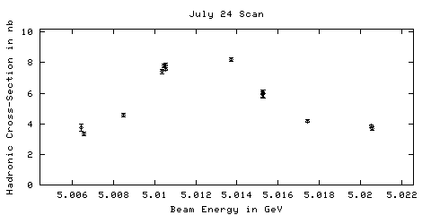
127924 07/23/2002 22:01 DataTaking 5.01046 1162.82 7.84 +/- 0.26
127925 07/23/2002 23:10 DataTaking 5.01052 1698.79 7.53 +/- 0.22
127927 07/24/2002 00:53 DataTaking 5.01054 1158.88 7.85 +/- 0.25
127928 07/24/2002 02:18 DataTaking 5.01742 589.86 4.06 +/- 0.16
127929 07/24/2002 03:17 SmallCal 5.01744 0.00 n/a
127930 07/24/2002 03:39 DataTaking 5.00644 92.14 3.39 +/- 0.27
127931 07/24/2002 04:12 DataTaking 5.00659 452.80 3.22 +/- 0.14
127932 07/24/2002 05:27 DataTaking 5.02050 690.19 3.94 +/- 0.15
127933 07/24/2002 06:49 DataTaking 5.01525 666.74 5.91 +/- 0.24
127934 07/24/2002 07:43 DataTaking 5.01529 230.08 4.96 +/- 0.41
127935 n/a n/a n/a n/a n/a n/a
127936 07/24/2002 10:54 CCBigCal 5.01529 0.00 n/a
127937 07/24/2002 10:58 CosmicRun 5.01529 0.00 0.00 +/- 0.00
127938 07/24/2002 13:32 CCBigCal 5.01529 n/a n/a
127939 07/24/2002 13:49 CCBigCal 5.01529 0.00 n/a
127940 07/24/2002 15:11 CosmicRun 5.01529 0.00 0.00 +/- 0.00
127941 07/24/2002 16:22 CosmicRun 5.01529 3.86 0.00 +/- 0.00
127942 07/24/2002 17:39 CCBigCal 5.01529 n/a n/a
127943 07/24/2002 17:50 CCBigCal 5.01529 n/a n/a
127944 07/24/2002 18:01 CCBigCal 5.01529 0.00 n/a
127945 07/24/2002 18:17 CCBigCal 5.01529 0.00 n/a
127946 07/24/2002 18:34 CCBigCal 5.01529 0.00 n/a
127947 07/24/2002 19:06 SmallCal 5.01529 0.00 n/a
127948 n/a n/a n/a n/a n/a n/a
127949 07/24/2002 19:28 DataTaking 5.17930 23.51 0.00 +/- 0.00
July 24 Continuum Point
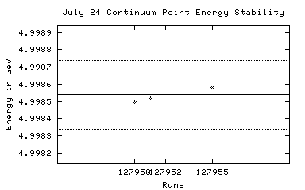 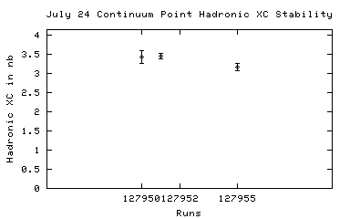
127950 07/24/2002 20:41 DataTaking 4.99850 151.73 3.12 +/- 0.35
127951 07/24/2002 21:06 DataTaking 4.99852 795.42 3.63 +/- 0.17
127955 07/25/2002 02:14 DataTaking 4.99858 384.16 2.86 +/- 0.18
July 24 Scan
127956 07/25/2002 03:08 DataTaking 5.01526 132.44
n/a
127957 07/25/2002 04:23 DataTaking 5.01529 134.27 5.82 +/- 0.35
127958 07/25/2002 05:08 DataTaking 5.01525 276.03 5.89 +/- 0.29
127959 07/25/2002 05:53 DataTaking 5.00848 379.43 4.62 +/- 0.22
127961 07/25/2002 07:05 DataTaking 5.02056 390.77 3.67 +/- 0.19
127962 07/25/2002 08:01 DataTaking 5.01371 794.03 7.81 +/- 0.28
127963 07/25/2002 09:01 DataTaking 5.01038 542.05 6.94 +/- 0.27
127964 n/a n/a DataTaking n/a n/a 6.85 +/- 0.27
127965 07/25/2002 11:01 SmallCal 5.01041 0.00 n/a
127966 07/25/2002 11:14 DataTaking 5.17905 89.51 6.17 +/- 0.53
127967 07/25/2002 11:29 DataTaking 5.17908 186.06 6.45 +/- 0.46
127968 07/25/2002 12:19 DataTaking 5.17907 1235.59 6.61 +/- 0.19
127969 07/25/2002 14:01 DataTaking 5.17907 918.63 6.73 +/- 0.20
127970 07/25/2002 15:30 DataTaking 5.17908 1244.68 6.83 +/- 0.21
127971 07/25/2002 17:11 DataTaking 5.17908 n/a n/a
127972 n/a n/a n/a n/a n/a n/a
127973 n/a n/a n/a n/a n/a n/a
127974 n/a n/a n/a n/a n/a n/a
127975 n/a n/a n/a n/a n/a n/a
127976 07/25/2002 20:24 DataTaking 5.17915 30.79 0.00 +/- 0.00
127977 n/a n/a DataTaking n/a n/a n/a
127978 07/25/2002 20:35 DataTaking 5.17912 124.38 n/a
127979 07/25/2002 20:51 DataTaking 5.17912 161.18 7.78 +/- 0.70
127980 07/25/2002 21:06 DataTaking 5.17911 161.40 6.26 +/- 0.52
127981 07/25/2002 21:21 DataTaking 5.17909 1622.85 6.60 +/- 0.20
127982 07/25/2002 22:38 SmallCal 5.17914 0.00 n/a
127983 07/25/2002 22:42 SmallCal 5.17914 0.00 n/a
127984 07/25/2002 22:46 DataTaking 5.17911 1575.64 6.78 +/- 0.20
127985 07/26/2002 00:08 DataTaking 5.17859 0.03 n/a
127986 07/26/2002 00:26 DataTaking 5.17914 1379.07 n/a
127987 n/a n/a SmallCal n/a n/a n/a
127988 07/26/2002 01:48 SmallCal 5.17912 0.00 n/a
127989 07/26/2002 01:56 DataTaking 5.17915 1467.15 6.82 +/- 0.20
127990 07/26/2002 03:09 DataTaking 5.17912 1662.08 6.61 +/- 0.20
127991 07/26/2002 04:30 DataTaking 5.17912 1649.62 6.52 +/- 0.20
127992 07/26/2002 05:51 DataTaking 5.17911 1524.68 6.65 +/- 0.22
127993 07/26/2002 07:02 SmallCal 5.17915 0.00 n/a
127994 07/26/2002 07:10 DataTaking 5.17915 1598.90 6.42 +/- 0.18
127995 07/26/2002 08:33 DataTaking 5.17914 1585.86 6.73 +/- 0.19
127996 07/26/2002 09:54 DataTaking 5.17915 1602.19 n/a
127997 07/26/2002 11:17 DataTaking 5.17916 840.71 7.47 +/- 0.30
127998 07/26/2002 12:53 DataTaking 5.17916 n/a n/a
127999 07/26/2002 14:04 DataTaking 5.17913 1464.41 6.34 +/- 0.19
128000 07/26/2002 15:23 DataTaking 5.17916 1557.78 6.58 +/- 0.19
128001 07/26/2002 16:45 DataTaking 5.17916 1495.29 6.87 +/- 0.21
128002 07/26/2002 17:59 SmallCal 5.17915 0.00 n/a
128003 07/26/2002 18:05 DataTaking 5.17914 1538.44 6.71 +/- 0.20
128004 07/26/2002 19:26 DataTaking 5.17915 1623.45 6.76 +/- 0.20
128005 07/26/2002 20:48 DataTaking 5.17914 1087.32 6.52 +/- 0.24
128006 07/26/2002 21:43 DataTaking 5.17917 365.12 6.55 +/- 0.36
128007 07/26/2002 22:14 DataTaking 5.17914 1582.74 6.53 +/- 0.20
128008 07/26/2002 23:35 DataTaking 5.17917 1642.68 6.98 +/- 0.21
128009 07/27/2002 00:56 DataTaking 5.17918 1627.26 6.63 +/- 0.21
128010 07/27/2002 02:19 DataTaking 5.17918 2384.44 6.50 +/- 0.15
128011 07/27/2002 04:32 DataTaking 5.17921 518.25 6.63 +/- 0.26
128012 07/27/2002 05:59 DataTaking 5.17921 1047.45 6.81 +/- 0.22
128013 07/27/2002 07:13 SmallCal 5.17924 0.00 n/a
128014 07/27/2002 07:24 SmallCal 5.17924 0.00 n/a
128015 07/27/2002 07:30 RandomLow 5.17924 0.00 0.00 +/- 0.00
128016 07/27/2002 07:35 SmallCal 5.17924 0.00 n/a
128017 07/27/2002 07:42 DataTaking 5.17919 1577.34 6.43 +/- 0.18
128018 n/a n/a n/a n/a n/a n/a
128019 07/27/2002 09:12 DataTaking 5.17924 1639.97 6.70 +/- 0.17
128020 07/27/2002 10:56 DataTaking 5.17908 1840.82 6.71 +/- 0.18
128021 07/27/2002 12:45 DataTaking 5.17914 1770.71 6.30 +/- 0.17
128022 07/27/2002 14:32 DataTaking 5.17913 674.77 5.69 +/- 0.28
128023 07/27/2002 15:06 SmallCal 5.17913 0.00 n/a
128024 07/27/2002 15:15 DataTaking 5.17916 868.11 6.90 +/- 0.24
128025 07/27/2002 16:09 DataTaking 5.17911 1886.90 6.52 +/- 0.17
128026 n/a n/a DataTaking n/a n/a 6.51 +/- 0.17
128027 n/a n/a DataTaking n/a n/a n/a
128028 n/a n/a DataTaking n/a n/a n/a
128029 07/27/2002 19:22 DataTaking 5.17914 390.47 6.47 +/- 0.40
128030 07/27/2002 19:50 DataTaking 5.17914 745.45 6.60 +/- 0.25
128031 07/27/2002 20:47 DataTaking 5.17912 1858.00 6.56 +/- 0.17
128032 07/27/2002 22:29 DataTaking 5.17915 1494.90 6.44 +/- 0.18
128033 07/27/2002 23:57 SmallCal 5.17912 0.00 n/a
128034 07/28/2002 00:10 DataTaking 5.17915 66.93 5.86 +/- 0.50
128035 07/28/2002 00:27 DataTaking 5.17919 1839.67 6.68 +/- 0.17
128036 07/28/2002 02:02 DataTaking 5.17915 1945.67 6.31 +/- 0.17
128037 n/a n/a DataTaking n/a n/a 6.33 +/- 0.17
128038 07/28/2002 09:52 SmallCal 5.17915 0.00 n/a
128039 n/a n/a DataTaking n/a n/a 0.00 +/- 0.00
128040 07/28/2002 13:22 DataTaking 5.17912 1382.77 6.71 +/- 0.19
128041 n/a n/a DataTaking n/a n/a 6.70 +/- 0.19
128042 n/a n/a n/a n/a n/a n/a
128043 07/28/2002 15:26 DataTaking 5.17915 1100.90 6.44 +/- 0.21
128044 07/28/2002 16:38 DataTaking 5.17916 1556.38 6.54 +/- 0.18
128045 07/28/2002 18:19 DataTaking 5.17917 48.33 8.57 +/- 1.12
128046 07/28/2002 18:54 DataTaking 5.17920 1314.74 6.39 +/- 0.22
128047 n/a n/a n/a n/a n/a n/a
128048 07/28/2002 20:15 SmallCal 5.17926 n/a n/a
128049 07/28/2002 20:22 DataTaking 5.17926 198.47 0.00 +/- 0.00
128050 07/28/2002 20:46 DataTaking 5.17925 241.31 0.00 +/- 0.00
128051 07/28/2002 21:09 SmallCal 5.17928 0.00 n/a
128052 07/28/2002 21:18 DataTaking 5.17928 309.73 6.19 +/- 0.38
128053 07/28/2002 21:41 SmallCal 5.17925 0.00 n/a
128054 07/28/2002 21:51 DataTaking 5.17928 1591.29 6.51 +/- 0.17
128055 07/28/2002 23:24 DataTaking 5.17923 1802.85 6.83 +/- 0.18
128056 07/29/2002 01:01 DataTaking 5.17926 1965.21 6.45 +/- 0.17
128057 07/29/2002 02:44 DataTaking 5.17926 0.00 6.43 +/- 0.17
128058 n/a n/a n/a n/a n/a n/a
128059 n/a n/a n/a n/a n/a n/a
128060 n/a n/a DataTaking n/a n/a n/a
128061 07/29/2002 03:50 DataTaking 5.17925 51.62 8.17 +/- 1.05
128062 07/29/2002 03:58 SmallCal 5.17925 0.00 n/a
128063 07/29/2002 04:04 DataTaking 5.17928 317.78 6.33 +/- 0.35
128064 07/29/2002 04:29 DataTaking 5.17928 1773.75 n/a
128065 07/29/2002 06:12 DataTaking 5.17931 2051.78 6.77 +/- 0.16
 Jim Pivarski <mccann@mail.lns.cornell.edu>
Last Modified: Tuesday, July 30, 2002.
Jim Pivarski <mccann@mail.lns.cornell.edu>
Last Modified: Tuesday, July 30, 2002.